The lab provides a hands-on guide to building and evaluating a credit scorecard using loan-level (accepts) and applicant-level (rejects) data from LendingClub (an unsecured lender). The primary goal is to develop a 3-digit score that ranks Through-the-Door (TTD) applicants based on their predicted credit risk. We will use Fuzzy Augmentation (a reject inference method) to incorporate data from rejected applicants, to reduce selection bias in the training data.
We will cover data preparation, assessing feature relationships, reject inference using fuzzy augmentation, training models with AutoGluon, diagnosing model behavior with ICE/PDP, applying monotonic constraints, evaluating performance using the KS statistic, and selecting decision thresholds.
Learning Objectives:
Load and prepare accepted and rejected lending data.
Define a target variable for credit default.
Perform feature engineering and selection for scorecard modeling.
Assess feature monotonicity using binned probability plots.
Understand and implement reject inference (Fuzzy Augmentation).
Train weighted models using AutoGluon on the augmented TTD dataset.
Diagnose model behavior using ICE and PDP.
Apply monotonic constraints to align models with business logic.
Evaluate scorecard performance using the KS statistic.
Select an optimal decision threshold based on business objectives.
2 Setup
2.1 Import Python Libraries
Code
# System utilitiesimport osimport shutilimport randomimport sysimport warningsimport timeimport gcimport psutilfrom pathlib import Pathsys.path.insert(0, str(Path.cwd().parent))CPU_LIMIT =2os.environ['OMP_NUM_THREADS'] =str(CPU_LIMIT)os.environ['OPENBLAS_NUM_THREADS'] =str(CPU_LIMIT)os.environ['MKL_NUM_THREADS'] =str(CPU_LIMIT)os.environ['VECLIB_MAXIMUM_THREADS'] =str(CPU_LIMIT)os.environ['NUMEXPR_NUM_THREADS'] =str(CPU_LIMIT)num_jobs = CPU_LIMIT# Data manipulation and visualizationimport pandas as pdimport numpy as npimport matplotlib.pyplot as pltimport seaborn as snsfrom IPython.display import display # Explicit import for displayfrom scipy import stats, specialfrom sklearn.feature_selection import mutual_info_classifimport reimport duckdb# Machine learning - scikit-learnfrom sklearn.model_selection import train_test_splitfrom sklearn.linear_model import LogisticRegression, LogisticRegressionCVfrom sklearn.metrics import roc_auc_score, f1_score, confusion_matrix, classification_reportfrom sklearn.preprocessing import LabelEncoder, StandardScaler, OneHotEncoderfrom sklearn.impute import SimpleImputerfrom sklearn.pipeline import Pipelinefrom sklearn.compose import ColumnTransformerfrom sklearn.inspection import PartialDependenceDisplayfrom sklearn.base import BaseEstimator, ClassifierMixinfrom sklearn.utils.validation import check_is_fitted, check_X_y, check_arrayfrom sklearn import set_config# Specialized ML librariesfrom autogluon.tabular import TabularPredictor, TabularDatasetfrom autogluon.common.features.feature_metadata import FeatureMetadata # For monotonic constraintsimport shapfrom ydata_profiling import ProfileReport# Counterfactual Explanations (optional, install if needed: pip install dice-ml)try:import dice_mlfrom dice_ml.utils import helpers # Helper functions for DICEexceptImportError:print(""" dice-ml not found. You need to update your conda env by running: conda activate env_AutoGluon_202502 conda install -c conda-forge dice-ml """) dice_ml =None# Helper functions from course_utils.helpersfrom course_utils.helpers import ( global_set_seed, remove_ag_folder, AutoGluonSklearnWrapper, binned_prob_plot, calculate_score, score_to_probability, ks_table, show_pdp, generate_eda_report, parse_emp_length, split_data, train_autogluon_model, summarize_ttd_by_source, create_TTD_data)# Settingspd.set_option('display.max_columns', 50)pd.set_option('display.max_rows', 100)warnings.filterwarnings('ignore', category=FutureWarning) # Suppress specific FutureWarningsset_config(transform_output="pandas") # Set sklearn output to pandasprint("Libraries imported successfully.")
Libraries imported successfully.
3 Data Loading & EDA
Goal: Load the LendingClub accepted and rejected datasets, define the target variable (default_flag), split the data, and perform basic EDA.
3.1 Read Parquet Files
Load the datasets containing information on accepted loans and rejected applications.
Code
# Define file paths relative to the current script locationaccepted_path ='../Data/lendingclub/accepted_2007_to_2018Q4.parquet'rejected_path ='../Data/lendingclub/rejected_2007_to_2018Q4.parquet'# Load data using pandastry: df_accepted = pd.read_parquet(accepted_path) df_rejected = pd.read_parquet(rejected_path)# Sample rejected data to reduce memory usage max_rejected_rows =500_000 df_rejected = df_rejected.sample(n=max_rejected_rows, random_state=2025)print("Data loaded successfully.")print(f"Accepted data shape: {df_accepted.shape}")print(f"Rejected data shape: {df_rejected.shape}")exceptFileNotFoundError:print("Error: Parquet files not found. Make sure the paths are correct and the data generation scripts have been run.")# Stop execution or handle error appropriately df_accepted, df_rejected =None, None# Set to None to avoid errors later
Data loaded successfully.
Accepted data shape: (2260701, 151)
Rejected data shape: (500000, 9)
3.2 Define Target Variable
Create the binary default_flag (1 for default, 0 for non-default) based on the loan_status in the accepted dataset. Rejected applicants do not have an observed default_flag.
Code
# Define default status based on 'loan_status'default_statuses = ["Charged Off", "Late (31-120 days)", "Does not meet the credit policy. Status:Charged Off", "Default"] df_accepted['default_flag'] = df_accepted['loan_status'].apply(lambda x: 1if x in default_statuses else0)print("Target variable 'default_flag' created.")print("Default Flag Distribution (Accepted):")print(df_accepted['default_flag'].value_counts(normalize=True))# Display loan status counts for contextprint("\nLoan Status Distribution (Accepted):")print(df_accepted['loan_status'].value_counts())
Target variable 'default_flag' created.
Default Flag Distribution (Accepted):
default_flag
0 0.871355
1 0.128645
Name: proportion, dtype: float64
Loan Status Distribution (Accepted):
loan_status
Fully Paid 1076751
Current 878317
Charged Off 268559
Late (31-120 days) 21467
In Grace Period 8436
Late (16-30 days) 4349
Does not meet the credit policy. Status:Fully Paid 1988
Does not meet the credit policy. Status:Charged Off 761
Default 40
Name: count, dtype: int64
3.3 Train, Calibration, and Test Split
Split both accepted and rejected datasets into training (60%), calibration (20%), and test (20%) sets. We use stratification for the accepted data based on the default_flag to maintain similar default rates across splits.
Code
# Define split proportionstrain_size =0.6calib_size_rel_to_remaining =0.5# 0.5 * (1 - 0.6) = 0.2 -> test_size for split_datarandom_seed =2025global_set_seed(random_seed) # Set global seed# --- Split Accepted Data (Stratified) ---print("Splitting Accepted Data...")df_accepted_train, df_accepted_calib, df_accepted_test = split_data( df=df_accepted, target_col='default_flag', train_size=train_size, calib_size_rel=calib_size_rel_to_remaining, # This is test_size in split_data context random_state=random_seed)# --- Split Rejected Data (Not Stratified) ---print("\nSplitting Rejected Data...")df_rejected_train, df_rejected_calib, df_rejected_test = split_data( df=df_rejected, target_col=None, # No stratification train_size=train_size, calib_size_rel=calib_size_rel_to_remaining, # This is test_size in split_data context random_state=random_seed)# Clean up the original large dataframesdel df_accepteddel df_rejectedprint("\nRemoved original df_accepted and df_rejected to free up memory.")gc.collect() # Call garbage collector
Splitting Accepted Data...
Splitting data (stratify=Yes)...
Train shape: (1356420, 152)
Calibration shape: (452140, 152)
Test shape: (452141, 152)
Train target mean: 0.1286
Calibration target mean: 0.1286
Test target mean: 0.1286
Splitting Rejected Data...
Splitting data (stratify=No)...
Train shape: (300000, 9)
Calibration shape: (100000, 9)
Test shape: (100000, 9)
Removed original df_accepted and df_rejected to free up memory.
20
3.4 Exploratory Data Analysis (EDA)
Perform initial EDA on the training portions of the accepted and rejected datasets to understand distributions, missing values, and potential issues. We use ydata-profiling for automated report generation.
Code
print("Generating EDA reports (this might take a while)...")# Define sampling fraction for large datasetsp_frac =0.05# Sample 5% for faster report generation# --- EDA for Accepted Training Data ---generate_eda_report( df=df_accepted_train, title="Accepted Train Data Profile", output_path="Lab02_eda_report_accepted_train.html", sample_frac=p_frac, random_state=random_seed)# --- EDA for Rejected Training Data ---generate_eda_report( df=df_rejected_train, title="Rejected Train Data Profile", output_path="Lab02_eda_report_rejected_train.html", sample_frac=p_frac, random_state=random_seed)
Generating EDA reports (this might take a while)...
Generating EDA report: Accepted Train Data Profile...
Report saved to: Lab02_eda_report_accepted_train.html
Generating EDA report: Rejected Train Data Profile...
Report saved to: Lab02_eda_report_rejected_train.html
4 Monotonicity Checks
Goal: Process the raw data to create a set of common features present in both accepted and rejected datasets. Then, analyze the relationship between these features and the default outcome (using accepted data) to check for expected monotonic trends.
# Define common feature names globallycommon_feature_names = ['loan_amnt', 'emp_length', 'addr_state', 'dti', 'credit_score']target_col ='default_flag'# Remove non-numeric chars from dti in df_rejected_traindf_rejected_train['Debt-To-Income Ratio'] = df_rejected_train['Debt-To-Income Ratio'].astype(str).str.replace(r'[^0-9\.\-]', '', regex=True)df_rejected_train['Debt-To-Income Ratio'] = pd.to_numeric(df_rejected_train['Debt-To-Income Ratio'], errors='coerce')rejected_train_median_loan_amnt = df_rejected_train['Amount Requested'].median(skipna=True)rejected_train_median_emp_length = df_rejected_train['Employment Length'].apply(parse_emp_length).median(skipna=True)rejected_train_p90_dti = df_rejected_train['Debt-To-Income Ratio'].quantile(0.90, interpolation='nearest')rejected_train_p10_credit_score = df_rejected_train['Risk_Score'].quantile(0.10, interpolation='nearest')def process_lending_data(df: pd.DataFrame, source_type: str, fillMissing_loanamnt: int, fillMissing_emp_length: int, fillMissing_dti: float, fillMissing_credit_score: int) -> pd.DataFrame |None:""" Processes LendingClub data (accepted or rejected) to extract common features. This function standardizes column names, handles missing values, transforms data types, and applies validations to ensure consistent data formats across accepted and rejected loan applications. Args: df (pd.DataFrame): Input DataFrame (either accepted or rejected). source_type (str): 'accepted' or 'rejected'. fillMissing_loanamnt (int): Value to fill missing loan amount entries. fillMissing_emp_length (int): Value to fill missing employment length entries. fillMissing_dti (float): Value to fill missing debt-to-income ratio entries. fillMissing_credit_score (int): Value to fill missing credit score entries. Returns: pd.DataFrame | None: Processed DataFrame with common features (and target for accepted), or None if input df is None. Raises: ValueError: If source_type is not 'accepted' or 'rejected'. """if df isNone:returnNone df_proc = df.copy()# Column mapping and credit_score logicif source_type =='accepted': rename_map = {'loan_amnt': 'loan_amnt','emp_length': 'emp_length','addr_state': 'addr_state','dti': 'dti','fico_range_low': 'fico_range_low','fico_range_high': 'fico_range_high' }elif source_type =='rejected': rename_map = {'Amount Requested': 'loan_amnt','Employment Length': 'emp_length','State': 'addr_state','Debt-To-Income Ratio': 'dti','Risk_Score': 'credit_score' }else:raiseValueError("source_type must be 'accepted' or 'rejected'")# Warn if missing columns missing_cols = [col for col in rename_map.keys() if col notin df_proc.columns]if missing_cols:print(f"Warning: Missing columns in {source_type} data: {missing_cols}") df_proc = df_proc.rename(columns=rename_map)# loan_amnt df_proc['loan_amnt'] = pd.to_numeric(df_proc.get('loan_amnt'), errors='coerce').fillna(fillMissing_loanamnt).clip(lower=500)# emp_length df_proc['emp_length'] = df_proc.get('emp_length').apply(parse_emp_length).fillna(fillMissing_emp_length) # dti dti_series = df_proc.get('dti').astype(str).str.replace(r'[^0-9\.\-]', '', regex=True) df_proc['dti'] = pd.to_numeric(dti_series, errors='coerce').fillna(fillMissing_dti).astype("float32").clip(lower=0, upper=300)# credit_scoreif source_type =='accepted':# Use FICO if available, else fallbackif'fico_range_low'in df_proc.columns and'fico_range_high'in df_proc.columns: df_proc['credit_score'] = (df_proc['fico_range_low'] + df_proc['fico_range_high']) /2else: df_proc['credit_score'] = np.nan df_proc['credit_score'] = df_proc['credit_score'].fillna(fillMissing_credit_score).clip(lower=300, upper=850)else: df_proc['credit_score'] = pd.to_numeric(df_proc.get('credit_score'), errors='coerce').fillna(fillMissing_credit_score).clip(lower=300, upper=850)# Target column for acceptedif source_type =='accepted':if target_col notin df_proc.columns:print(f"Warning: Target column '{target_col}' not found in accepted data. Adding placeholder.") df_proc[target_col] =0 cols_to_keep = [col for col in common_feature_names if col in df_proc.columns] + [target_col]else: cols_to_keep = [col for col in common_feature_names if col in df_proc.columns]return df_proc[cols_to_keep].copy()# --- Apply the function to the training data ---print("Processing training data using the defined function...")df_accepted_train_common = process_lending_data( df=df_accepted_train, source_type='accepted', fillMissing_loanamnt=rejected_train_median_loan_amnt, fillMissing_emp_length=rejected_train_median_emp_length, fillMissing_dti=rejected_train_p90_dti, fillMissing_credit_score=rejected_train_p10_credit_score)df_rejected_train_common = process_lending_data( df=df_rejected_train, source_type='rejected', fillMissing_loanamnt=rejected_train_median_loan_amnt, fillMissing_emp_length=rejected_train_median_emp_length, fillMissing_dti=rejected_train_p90_dti, fillMissing_credit_score=rejected_train_p10_credit_score)print(f"Accepted training data processed. Shape: {df_accepted_train_common.shape}")# Verify common features are presentmissing_acc = [f for f in common_feature_names if f notin df_accepted_train_common.columns]if missing_acc: print(f" Warning: Missing common features after processing accepted: {missing_acc}")print(f"Rejected training data processed. Shape: {df_rejected_train_common.shape}")# Verify common features are presentmissing_rej = [f for f in common_feature_names if f notin df_rejected_train_common.columns]if missing_rej: print(f" Warning: Missing common features after processing rejected: {missing_rej}")print("\nCommon features expected:")print(common_feature_names)
Processing training data using the defined function...
Accepted training data processed. Shape: (1356420, 6)
Rejected training data processed. Shape: (300000, 5)
Common features expected:
['loan_amnt', 'emp_length', 'addr_state', 'dti', 'credit_score']
Check dtypes
Code
# Convert .info() output to DataFrame for accepted training dataaccepted_info = pd.DataFrame({"column": df_accepted_train_common.columns,"dtype": [df_accepted_train_common[col].dtype for col in df_accepted_train_common.columns],"null_count": [df_accepted_train_common[col].isnull().sum() for col in df_accepted_train_common.columns],"non_null_count": [df_accepted_train_common[col].notnull().sum() for col in df_accepted_train_common.columns],"unique_count": [df_accepted_train_common[col].nunique() for col in df_accepted_train_common.columns]})display(accepted_info)# Convert .info() output to DataFrame for rejected training datarejected_info = pd.DataFrame({"column": df_rejected_train_common.columns,"dtype": [df_rejected_train_common[col].dtype for col in df_rejected_train_common.columns],"null_count": [df_rejected_train_common[col].isnull().sum() for col in df_rejected_train_common.columns],"non_null_count": [df_rejected_train_common[col].notnull().sum() for col in df_rejected_train_common.columns],"unique_count": [df_rejected_train_common[col].nunique() for col in df_rejected_train_common.columns]})display(rejected_info)
Table 1: Data types in each data frame
column
dtype
null_count
non_null_count
unique_count
0
loan_amnt
float64
0
1356420
1567
1
emp_length
int64
0
1356420
11
2
addr_state
object
17
1356403
51
3
dti
float32
0
1356420
9131
4
credit_score
float64
0
1356420
48
5
default_flag
int64
0
1356420
2
column
dtype
null_count
non_null_count
unique_count
0
loan_amnt
float64
0
300000
1571
1
emp_length
int64
0
300000
11
2
addr_state
object
0
300000
51
3
dti
float32
0
300000
13079
4
credit_score
float64
0
300000
461
4.2 Compare Data Distributions
Compare data distributions between df_accepted_train_common and df_rejected_train_common using ProfileReport.
Code
# Check if dataframes and ProfileReport existif'df_accepted_train_common'inlocals() and df_accepted_train_common isnotNoneand\'df_rejected_train_common'inlocals() and df_rejected_train_common isnotNoneand\'ProfileReport'inlocals() and ProfileReport isnotNone:print("Generating comparison report for common features (this might take a while)...")# Define sampling fraction for faster report generation p_frac_compare =0.1# Sample 10% for comparisontry:# Profile for Accepted Common Features accepted_common_profile = ProfileReport( df_accepted_train_common.sample(frac=p_frac_compare, random_state=2025), title="Accepted Train", progress_bar=False, duplicates=None, interactions=None )# Profile for Rejected Common Features rejected_common_profile = ProfileReport( df_rejected_train_common.sample(frac=p_frac_compare, random_state=2025), title="Rejected Train", progress_bar=False, duplicates=None, interactions=None )# Compare the two profiles comparison_report = accepted_common_profile.compare(rejected_common_profile)# Save the comparison report comparison_report_path ="Lab02_eda_report_compare_common_features.html" comparison_report.to_file(comparison_report_path)print(f"Comparison report saved to: {comparison_report_path}")exceptExceptionas e:print(f"Error generating comparison report: {e}")else:print("Skipping comparison report generation: Required dataframes or ProfileReport not available.")
Generating comparison report for common features (this might take a while)...
Comparison report saved to: Lab02_eda_report_compare_common_features.html
4.3 Assess Feature Monotonicity (Accepted Data)
Concept: Before building complex models, it’s essential to understand the fundamental relationship between key features and the target variable (probability of default). We expect certain features to have a monotonic relationship with risk – meaning, as the feature value increases, the risk should consistently increase or consistently decrease.
Example: We expect higher Debt-to-Income (dti) ratios to correspond to higher default risk (monotonic increasing). We expect higher credit scores (credit_score) to correspond to lower default risk (monotonic decreasing).
Method: We use the binned_prob_plot function on the accepted training data (df_accepted_train_common) to visualize the average default rate across bins of each feature. * For continuous features, the plot shows the trend across quantiles, and we calculate the Spearman rank correlation between the bin rank and the default rate (or log-odds). A correlation near +1 (increasing) or -1 (decreasing) suggests strong monotonicity. * For categorical features, the plot shows the default rate per category, and we calculate Mutual Information to measure if the feature provides information about the target, indicating varying risk levels across categories.
Goal: Visualize the relationship between selected common features (loan_amnt, dti, credit_score, emp_length) and default_flag using the accepted training data. Check if the observed trends align with business intuition.
Code
%matplotlib inlineif'df_accepted_train_common'inlocals() and df_accepted_train_common isnotNone:print("--- Assessing Monotonicity on Accepted Training Data ---") features_to_plot = ['loan_amnt', 'dti', 'credit_score', 'emp_length'] monotonicity_results_accepted = []for feature in features_to_plot:if feature in df_accepted_train_common.columns:print(f"\nPlotting for feature: {feature}") output = binned_prob_plot( data=df_accepted_train_common, feature=feature, target_binary='default_flag', cont_feat_flag=True ) monotonicity_results_accepted.append(output)print(f" Measure ({output['measure_name']}): {output['measure_value']:.4f}")if output['p_value'] isnotNone:print(f" P-value: {output['p_value']:.4f}")else:print(f"\nSkipping plot for feature '{feature}' as it's not in df_accepted_train_common.")print("\n--- Monotonicity Assessment Summary (Accepted Data) ---")for res in monotonicity_results_accepted: pval_str =f", p-value: {res['p_value']:.4f}"if res['p_value'] isnotNoneelse""print(f"Feature: {res['feature']}, Measure: {res['measure_name']}, Value: {res['measure_value']:.4f}{pval_str}")else:print("Skipping monotonicity check as df_accepted_train_common is not available.")
--- Assessing Monotonicity on Accepted Training Data ---
Plotting for feature: loan_amnt
Measure (spearman_corr): 0.7576
P-value: 0.0111
Plotting for feature: dti
Measure (spearman_corr): 1.0000
P-value: 0.0000
Plotting for feature: credit_score
Measure (spearman_corr): -1.0000
P-value: 0.0000
Plotting for feature: emp_length
(a) Binned probability plots for the accept population.
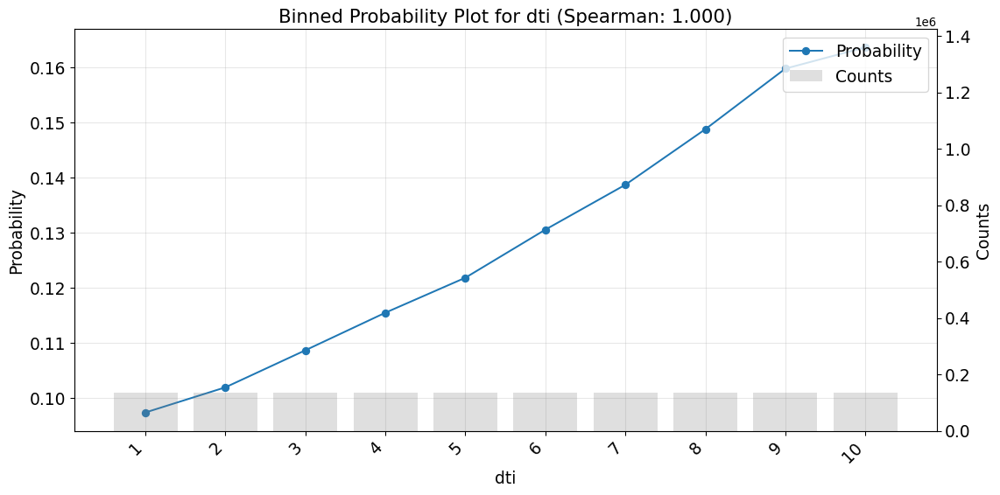
(b)
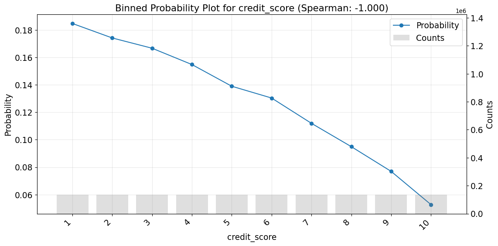
(c)
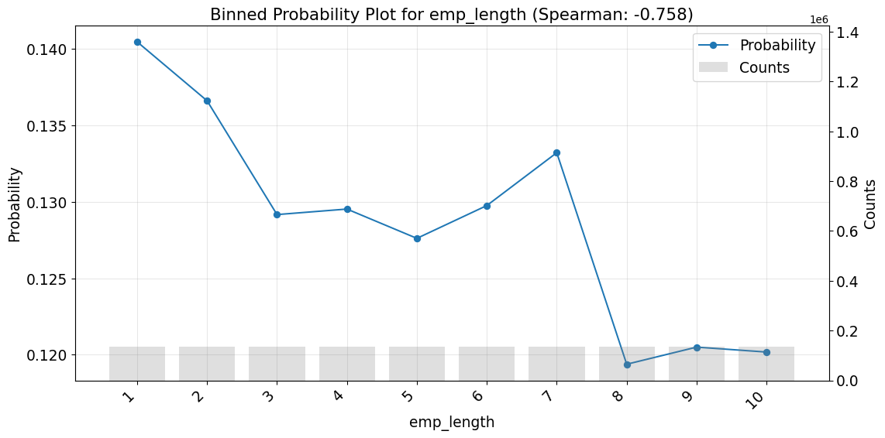
(d)
Figure 1
Interpretation: Based on the binned probability plots:
loan_amnt: Higher loan amounts are associated with higher default rates, indicating a positive correlation.
dti: Higher Debt-to-Income ratios correlate with higher default rates, confirming the expected monotonic relationship.
credit_score: Higher credit scores are associated with lower default rates, indicating a negative correlation.
emp_length: Higher employment lengths are associated with lower default rates, which is expected.
Categorical Feature Check (State):
For high-cardinality categorical features like addr_state, visualizing the binned probability might be less informative due to the large number of categories. However, we can still calculate the Mutual Information (MI) score to quantify the relationship between the state and the default flag without generating the plot. A higher MI suggests the state provides more information about the likelihood of default.
Code
%matplotlib inlineif'df_accepted_train_common'inlocals() and df_accepted_train_common isnotNone: feature_state ='addr_state'if feature_state in df_accepted_train_common.columns:print(f"\n--- Calculating Mutual Information for {feature_state} (Accepted Data) ---")# Calculate MI without plotting state_mi_output = binned_prob_plot( data=df_accepted_train_common, feature=feature_state, target_binary='default_flag', cont_feat_flag=False, # Explicitly categorical show_plot=False# Do not generate the plot )print(f"Feature: {state_mi_output['feature']}")print(f" Measure: {state_mi_output['measure_name']}")print(f" Value: {state_mi_output['measure_value']:.4f}")# Store result if needed# monotonicity_results_accepted.append(state_mi_output) else:print(f"\nSkipping MI calculation for feature '{feature_state}' as it's not in df_accepted_train_common.")else:print("\nSkipping MI calculation for 'addr_state' as df_accepted_train_common is not available.")
--- Calculating Mutual Information for addr_state (Accepted Data) ---
Feature: addr_state
Measure: mutual_info
Value: 0.0008
Mutual Information for addr_state is calculated, but the plot is not generated due to the high cardinality of the feature. The MI value is very close to zero.
4.4 Define Modeling Features
In subsequent sections, we will use only the following features: loan_amnt, dti, credit_score, and emp_length for modeling. The addr_state feature will be excluded from the modeling process due to low mutual information.
Code
modeling_features = ['loan_amnt', 'dti', 'credit_score', 'emp_length']print(f"Features selected for modeling: {modeling_features}")
Features selected for modeling: ['loan_amnt', 'dti', 'credit_score', 'emp_length']
5 Fuzzy Augmentation
Concept: Models trained only on accepted applicants (KGB - Known Good/Bad) suffer from selection bias because they don’t learn from the rejected population, which often represents higher risk. Reject Inference (RI) techniques address this by incorporating information from rejects.
Fuzzy Augmentation:
Train a model (e.g., Logistic Regression) on the accepted training data (df_accepted_train_common) to predict the probability of default (PD), PD = P(default=1 | features).
Apply this model to the rejected applicants to get their predicted PD.
Combine the original accepted data (with sample_weight = 1) and the two weighted sets of rejected data to create the augmented “Through-the-Door” (TTD) dataset. This approach assigns fractional counts to both default and non-default outcomes for each rejected applicant based on their predicted risk.
Goal: Implement fuzzy augmentation to create the TTD training dataset.
5.1 Train Initial Model for Weighting
Train a Logistic Regression model on the accepted training data (df_accepted_train_common) using a subset of the common features. This model estimates the PD needed for weighting.
Code
# Using only features selected for the main model for consistency in RIri_features = modeling_features print(f"Using RI features (same as modeling features): {ri_features}")# Prepare data for Logistic Regression - use .copy() to avoid SettingWithCopyWarningX_acc_ri = df_accepted_train_common[ri_features].copy()y_acc_ri = df_accepted_train_common['default_flag'] # Basic Preprocessing Pipeline for Logistic Regression# All ri_features are numeric nownumeric_features_ri = ri_features # Use the selected features# Define preprocessing stepsnumeric_transformer_ri = Pipeline(steps=[ ('scaler', StandardScaler())])# Create the preprocessor - Apply the numeric transformer to the numeric featurespreprocessor_ri = ColumnTransformer( transformers=[ ('num', numeric_transformer_ri, numeric_features_ri) ], remainder='passthrough'# Keep other columns if any (though there shouldn't be here))# Define LogisticRegressionCV with cross-validation parameterslogreg_cv = LogisticRegressionCV( Cs=10, # Try 10 C values on a logarithmic scale cv=5, # Use 5-fold cross-validation penalty='l2', # Use L2 regularization scoring='roc_auc', # Optimize for AUC random_state=2025, max_iter=1000, # Increase max iterations for convergence solver='liblinear'# Suitable solver for this problem size and penalty)# Create the full pipeline with Logistic Regression CVri_model = Pipeline(steps=[('preprocessor', preprocessor_ri), ('classifier', logreg_cv)]) # Use LogisticRegressionCVglobal_set_seed(random_seed) # Set global seedprint("Training Reject Inference Logistic Regression model...")start_time = time.time()ri_model.fit(X_acc_ri, y_acc_ri)end_time = time.time()print(f"RI model training completed in {end_time - start_time:.2f} seconds.")
Using RI features (same as modeling features): ['loan_amnt', 'dti', 'credit_score', 'emp_length']
Training Reject Inference Logistic Regression model...
RI model training completed in 26.21 seconds.
5.2 Check RI Model Coefficients
Goal: After training the RI model, we need to check the coefficients to ensure they align with our expectations based on the monotonicity checks. This helps validate that the model is capturing the expected relationships between features and default risk.
Check the ri_model (also known as the KGB model) to ensure the coefficients are reasonable.
Code
print("\n--- RI Model Coefficients ---")# Extract coefficients and intercept from the Logistic Regression modelifhasattr(ri_model.named_steps['classifier'], 'coef_') and\hasattr(ri_model.named_steps['classifier'], 'intercept_'): coeffs = ri_model.named_steps['classifier'].coef_[0] # Get the coefficients intercept = ri_model.named_steps['classifier'].intercept_[0] # Get the intercept# Get feature names from the preprocessor step if possibletry:# Access the fitted ColumnTransformer to get output feature names preprocessor = ri_model.named_steps['preprocessor']# Get feature names after transformation (e.g., scaled numeric features)# Note: This relies on the structure of the preprocessor feature_names = preprocessor.get_feature_names_out()exceptException:# Fallback to original feature names if getting transformed names failsprint("Warning: Could not get transformed feature names. Using original RI feature names.") feature_names = ri_features # Use the original input feature names# Create DataFrame for coefficients coeff_df = pd.DataFrame({'Feature': feature_names, 'Coefficient': coeffs})# Add the intercept as a separate row intercept_df = pd.DataFrame({'Feature': ['Intercept'], 'Coefficient': [intercept]})# Combine coefficients and intercept full_coeff_df = pd.concat([intercept_df, coeff_df], ignore_index=True)# Sort by absolute coefficient value might be more informative, but sorting by value is fine# full_coeff_df.sort_values(by='Coefficient', ascending=False, inplace=True) display(full_coeff_df)
--- RI Model Coefficients ---
Table 2: Reject Inference Model Coefficients
Feature
Coefficient
0
Intercept
-1.850129
1
num__loan_amnt
0.103190
2
num__dti
0.091577
3
num__credit_score
-0.383273
4
num__emp_length
-0.047428
Interpretation: The coefficients of the RI model should align with our expectations based on the monotonicity checks. For example, we expect a positive coefficient for dti (higher DTI leads to higher default risk) and a negative coefficient for credit_score (higher credit score leads to lower default risk).
5.3 Calculate Weights and Create TTD Dataset
Apply the trained ri_model to the rejected training data (df_rejected_train_common), calculate fuzzy weights, assign default_flag=1, and combine with df_accepted_train_common to create df_ttd_train.
Code
print("Applying RI model to rejected training data and calculating weights...")# Create df_ttd_train with the source columndf_ttd_train = create_TTD_data( # Renamed variable ri_model=ri_model, df_rejected=df_rejected_train_common, df_accepted=df_accepted_train_common, ri_features=ri_features, modeling_features=modeling_features, target_col=target_col)# Calculate and display summary statistics by source using helper functionsummary_default_rates = summarize_ttd_by_source( df_ttd=df_ttd_train, target_col=target_col, weight_col='sample_weight', source_col='source')
Table 3: Weighted default rates for TTD Train Data
Applying RI model to rejected training data and calculating weights...
Applying RI model to rejected data and calculating weights...
TTD dataset created. Shape: (1956420, 7)
--- Summarizing TTD Data by 'source' ---
Summary of Default Rates by Source:
source row_count unweighted_default_rate sum_weights \
0 Accepted 1356420 0.128645 1356420.0
1 Rejected 600000 0.500000 300000.0
weighted_default_rate
0 0.128645
1 0.457948
For rejected applicants in the TTD dataset, the default_flag and sample_weight are not observed outcomes. Instead, they are assigned based on the RI model’s predicted probability of default (PD). Each rejected applicant is represented twice: once as an assumed default (default_flag=1, weighted by PD) and once as an assumed non-default (default_flag=0, weighted by 1-PD). This approach reflects the model’s belief about their likely outcome, rather than an actual observed default status.
Table 4: Sample of Augmented TTD Training Data (Fuzzy Augmentation)
loan_amnt
dti
credit_score
emp_length
default_flag
sample_weight
source
312851
15000.0
23.620001
682.0
0
1
1.000000
Accepted
661783
30000.0
26.700001
662.0
8
0
1.000000
Accepted
867013
14000.0
24.100000
662.0
8
1
1.000000
Accepted
90266
11500.0
15.890000
727.0
4
0
1.000000
Accepted
776829
22000.0
27.010000
682.0
4
0
1.000000
Accepted
738926
10000.0
20.110001
662.0
1
0
1.000000
Accepted
838145
17000.0
14.190000
667.0
8
0
1.000000
Accepted
1408504
1000.0
22.299999
572.0
0
1
0.396747
Rejected
1505540
9500.0
21.629999
541.0
0
1
0.507679
Rejected
1191956
3000.0
3.600000
787.0
0
0
1.000000
Accepted
6 Building the TTD Scorecard Model (Initial)
Goal: Train a preliminary scorecard model using AutoGluon on the augmented TTD training dataset (df_ttd_train). This model will incorporate the sample_weight calculated during reject inference but will not yet have monotonic constraints applied.
6.1 Configure and Train AutoGluon Model
Set up AutoGluon to train on the TTD data, specifying the label (default_flag), sample weight column, and excluding complex models like Neural Networks to favor interpretability.
Sample weights are used only during the fit() process to influence how the model learns from the training data. Once the model is trained, predictions are made based solely on the input features the model learned from. You only need to provide the feature columns in the DataFrame passed to predict() or predict_proba().
Code
label ='default_flag'weight_col ='sample_weight'# --- AutoGluon Configuration ---model_folder_ttd_initial ='./Lab02_ag_models_TTD_Initial'# Hyperparameters: Limit tree depth for simplicity and interpretabilitycustom_hyperparameters = {'GBM': {'num_boost_round': 10000, 'num_leaves': 4},'CAT': {'iterations': 10000, 'depth': 2}}excluded_model_types = ['NN_TORCH', 'FASTAI', 'KNN'] # Arguments for TabularPredictor initialization (passed via wrapper)predictor_args = {'problem_type': 'binary','eval_metric': 'roc_auc', 'path': model_folder_ttd_initial,'sample_weight': weight_col # key parameter for Fuzz Augmentation}# Arguments for TabularPredictor.fit (passed via wrapper)fit_args = {'presets': {'holdout_frac': 0.2,'excluded_model_types': excluded_model_types,'hyperparameters': custom_hyperparameters, 'time_limit': 300 },'num_cpus': num_jobs}global_set_seed(random_seed) # Set global seed# Train model using the helper functionag_model_initial_wrapped = train_autogluon_model( df_train=df_ttd_train, label=label, weight_col=weight_col, modeling_features=modeling_features, # Use derived features list model_folder=model_folder_ttd_initial, predictor_args=predictor_args, fit_args=fit_args)# Access the underlying predictor for leaderboard etc. (optional, as helper prints it)ag_predictor_initial = ag_model_initial_wrapped.predictor
Table 5: Leaderboard for initial TTD Model
--- Training AutoGluon Model in: ./Lab02_ag_models_TTD_Initial ---
Using features: ['loan_amnt', 'dti', 'credit_score', 'emp_length']
Training data shape: (1956420, 7)
Sum of weights in training data: 1656420.00
Goal: Analyze the behavior of the initial, unconstrained TTD model. Use Partial Dependence Plots (PDP) and Individual Conditional Expectation (ICE) plots to understand how the model’s predictions change on average (PDP) and for individual instances (ICE) as key feature values vary. This helps identify if the model learned relationships that contradict business logic (e.g., non-monotonic trends).
Code
%matplotlib inline# Get all features from ag_model.predictorall_features = ag_model_initial_wrapped.predictor.features()# Get categorical features from ag_model.predictor's feature metadatacategorical_features = ag_model_initial_wrapped.predictor.feature_metadata.get_features(valid_raw_types=['category'])# Get numeric features from ag_model.predictor's feature metadatanumeric_features = ag_model_initial_wrapped.predictor.feature_metadata.get_features(valid_raw_types=['int', 'float', 'int64', 'float64', 'int32', 'float32'])show_pdp(wrappedAGModel = ag_model_initial_wrapped, list_features = all_features, list_categ_features = categorical_features if categorical_features elseNone, df = df_ttd_train.drop(columns=[label, weight_col]), show_ice=True, sampSize=25_000, n_jobs=num_jobs )
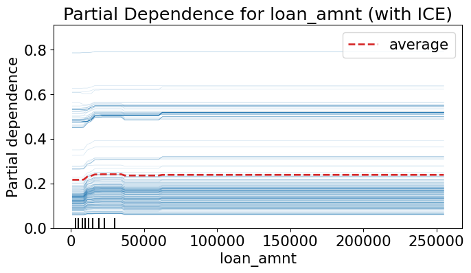
(a) PDP/ICE plots for the initial TTD model
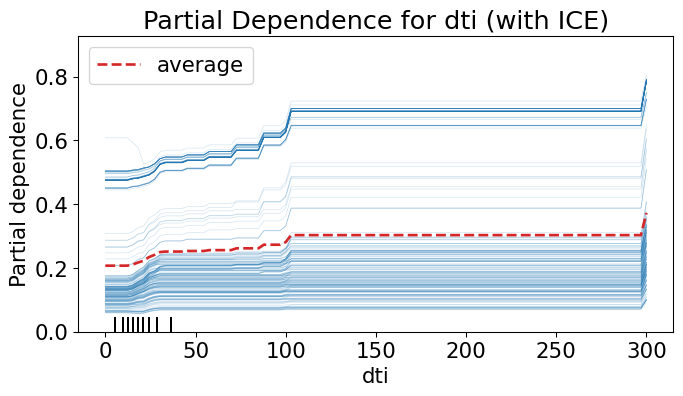
(b)
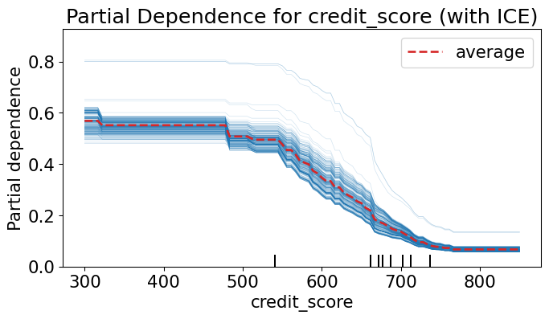
(c)
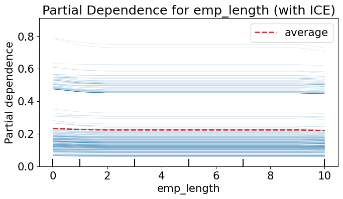
(d)
Figure 2
Interpretation:
Examine the PDP (red dashed line) and ICE (thin blue lines) for each feature:
Does loan_amnt consistently increase the predicted probability?
Does dti consistently increase the predicted probability?
Does credit_score consistently decrease the predicted probability?
If any of these plots show non-monotonic behavior (e.g., the average trend goes up then down, or vice-versa), it violates our business intuition and suggests that applying monotonic constraints is necessary. The ICE lines show if this behavior is consistent across all samples or if there’s significant heterogeneity.
8 Applying Monotonic Constraints
Concept: Monotonic constraints force the model to learn relationships that align with business expectations. We specify whether a feature should have a non-decreasing (+) or non-increasing (-) relationship with the target probability. AutoGluon passes these constraints to underlying models that support them (like LightGBM, XGBoost).
Goal: Define monotonic constraints based on business logic (e.g., dti increases risk, credit_score decreases risk) and retrain the AutoGluon model on the TTD data with these constraints enforced.
8.1 Define Constraints and Retrain Model
Specify the desired monotonic relationship for key features using AutoGluon’s feature_metadata and retrain the model.
Code
print("Training constrained AutoGluon model with monotonic constraints via hyperparameters...")# Define monotonic constraints for boosting modelsmonotone_constraints_dict = {'loan_amnt': 1, 'dti': 1, 'credit_score': -1, 'emp_length': -1}monotone_constraints_ordered = [monotone_constraints_dict.get(f, 0) for f in all_features] # Default to 0 if feature not in dict# Update hyperparameters to include monotonic constraintscustom_hyperparameters_constrained = {'GBM': {**custom_hyperparameters['GBM'], 'monotone_constraints': monotone_constraints_ordered},'CAT': {**custom_hyperparameters['CAT'], 'monotone_constraints': monotone_constraints_dict} # CatBoost uses dict}# Clean up previous model foldermodel_folder_ttd_constrained ='./Lab02_ag_models_TTD_Constrained'# Prepare predictor and fit arguments (reuse from initial, update path and hyperparameters)predictor_args_constrained = predictor_args.copy()predictor_args_constrained['path'] = model_folder_ttd_constrainedfit_args_constrained = {'presets': {'hyperparameters': custom_hyperparameters_constrained,'excluded_model_types': excluded_model_types,'holdout_frac': 0.2,'time_limit': 300 },'num_cpus': num_jobs}global_set_seed(random_seed) # Set global seed# Train constrained model using the helper functionag_model_constrained_wrapped = train_autogluon_model( df_train=df_ttd_train, label=label, weight_col=weight_col, modeling_features=modeling_features, # Use features from initial model model_folder=model_folder_ttd_constrained, predictor_args=predictor_args_constrained, fit_args=fit_args_constrained)# Access the underlying predictor (optional, as helper prints leaderboard)ag_predictor_constrained = ag_model_constrained_wrapped.predictor
Table 6: Leaderboard for constrained TTD Model
Training constrained AutoGluon model with monotonic constraints via hyperparameters...
--- Training AutoGluon Model in: ./Lab02_ag_models_TTD_Constrained ---
Using features: ['loan_amnt', 'dti', 'credit_score', 'emp_length']
Training data shape: (1956420, 7)
Sum of weights in training data: 1656420.00
Goal: Re-run the PDP/ICE plots on the constrained model to visually confirm that the specified monotonic relationships for loan_amnt, dti, and credit_score are now enforced.
Code
print("Generating PDP/ICE plots for the constrained model to verify monotonic behavior...")# Extract feature lists from the constrained predictorall_features_constrained = ag_model_constrained_wrapped.predictor.features()categorical_features_constrained = ag_model_constrained_wrapped.predictor.feature_metadata.get_features(valid_raw_types=['category'])# Prepare DataFrame for plotting (drop label and weight)plot_df_constrained = df_ttd_train.drop(columns=[label, weight_col])# Display PDP/ICE using the helpershow_pdp( wrappedAGModel=ag_model_constrained_wrapped, list_features=all_features_constrained, list_categ_features=categorical_features_constrained if categorical_features_constrained elseNone, df=plot_df_constrained, show_ice=True, sampSize=25_000, n_jobs=num_jobs)
Generating PDP/ICE plots for the constrained model to verify monotonic behavior...
(a) PDP/ICE plots for the constrained TTD model
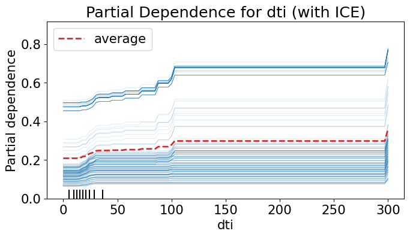
(b)
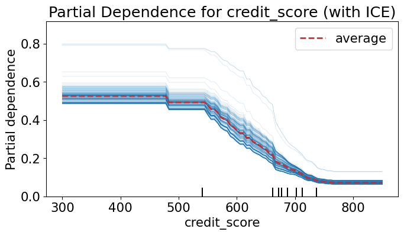
(c)
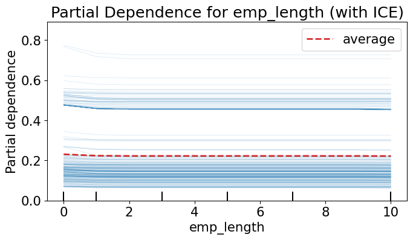
(d)
Figure 3
Interpretation: Carefully examine the PDP curves (red dashed lines) for loan_amnt, dti, and credit_score. They should now exhibit the enforced monotonic behavior: non-decreasing for loan_amnt and dti, and non-increasing for credit_score. If the curves are flat or follow the expected trend without reversals, the constraints have been successfully applied.
10 Evaluation & Scoring the Test Set
Goal: Evaluate the performance of the final constrained model on the held-out TTD test set. Convert predicted PDs into a 3-digit scores and analyze the results using a KS table.
10.1 Prepare Test Set and Evaluate
Goal: Apply the same feature processing steps used for the training data to the accepted and rejected test sets. For the rejected applicants, use the ri_model to estimate their reject inference weights. Combine the accepted and rejected test sets, ensuring that the sample_weight is set to 1 for accepted applicants and the rejected inference weights are used for rejected applicants.
Code
print("--- Preparing TTD Test Set ---")# 1. Process Accepted Test Dataprint("Processing accepted test data...")df_accepted_test_common = process_lending_data( df=df_accepted_test, source_type='accepted', fillMissing_loanamnt=rejected_train_median_loan_amnt, # Use values derived from training fillMissing_emp_length=rejected_train_median_emp_length, fillMissing_dti=rejected_train_p90_dti, fillMissing_credit_score=rejected_train_p10_credit_score)# 2. Process Rejected Test Dataprint("Processing rejected test data...")df_rejected_test_common = process_lending_data( df=df_rejected_test, source_type='rejected', fillMissing_loanamnt=rejected_train_median_loan_amnt, # Use values derived from training fillMissing_emp_length=rejected_train_median_emp_length, fillMissing_dti=rejected_train_p90_dti, fillMissing_credit_score=rejected_train_p10_credit_score)# 3. Create TTD Test Set using Fuzzy Augmentationprint("Creating TTD test set using RI model and Fuzzy Augmentation...")df_ttd_test_full = create_TTD_data( ri_model=ri_model, df_rejected=df_rejected_test_common, df_accepted=df_accepted_test_common, ri_features=ri_features, # Features used by ri_model modeling_features=modeling_features, # Features to keep in the final TTD set target_col=target_col)print(f"TTD test set created. Shape: {df_ttd_test_full.shape}")# 4. Summarize the TTD Test Set by Source using helper functionsummary_default_rates_test = summarize_ttd_by_source( df_ttd=df_ttd_test_full, target_col=target_col, weight_col='sample_weight', source_col='source')
Table 7: Weighted default rates for TTD Test Data
--- Preparing TTD Test Set ---
Processing accepted test data...
Processing rejected test data...
Creating TTD test set using RI model and Fuzzy Augmentation...
Applying RI model to rejected data and calculating weights...
TTD dataset created. Shape: (652141, 7)
TTD test set created. Shape: (652141, 7)
--- Summarizing TTD Data by 'source' ---
Summary of Default Rates by Source:
source row_count unweighted_default_rate sum_weights \
0 Accepted 452141 0.128646 452141.0
1 Rejected 200000 0.500000 100000.0
weighted_default_rate
0 0.128646
1 0.458358
Code
# 5. Evaluate the Constrained Model on the TTD Test Setprint("\n--- Evaluating Constrained Model on TTD Test Set ---")# Prepare features for prediction - use the features the model was trained onX_test_ttd = df_ttd_test_full[ag_model_constrained_wrapped.feature_names_] y_true_ttd = df_ttd_test_full['default_flag']weights_test_ttd = df_ttd_test_full['sample_weight']# Predict probabilities using the wrapped modelpred_proba_ttd = ag_model_constrained_wrapped.predict_proba(X_test_ttd)[:, 1]# Create results DataFramedf_test_results = df_ttd_test_full.copy()df_test_results['pred_proba'] = pred_proba_ttd# Calculate weighted AUC for the entire TTD test setauc_ttd_weighted = roc_auc_score(y_true_ttd, pred_proba_ttd, sample_weight=weights_test_ttd)print(f"Weighted AUC on entire TTD Test Set: {auc_ttd_weighted:.4f}")# Calculate unweighted AUC for the entire TTD test setauc_ttd_unweighted = roc_auc_score(y_true_ttd, pred_proba_ttd)print(f"Unweighted AUC on entire TTD Test Set: {auc_ttd_unweighted:.4f}")
--- Evaluating Constrained Model on TTD Test Set ---
Weighted AUC on entire TTD Test Set: 0.7339
Unweighted AUC on entire TTD Test Set: 0.7349
10.2 Convert Probability (PD) to Score
Concept: Convert the model’s predicted probability of default (PD) into a more intuitive 3-digit credit score (e.g., 300-850). Lower scores indicate higher risk.
Formulas:
\(Score = BaseScore - Factor \cdot \ln(OddsBad)\)
where \(OddsBad = \frac{PD}{1 - PD}\)
\(Factor = \frac{PDO}{\ln(2)}\).
Code
user_pdo =40user_basescore =680print("Converting predicted probabilities to scores...")# Use the defined helper functiondf_test_results['score'] = calculate_score( df_test_results['pred_proba'], pdo=user_pdo, base_score=user_basescore)print("Scores calculated and added to test results.")print("\nScore Distribution Summary:")print(df_test_results['score'].describe())# Plot score distributionplt.figure(figsize=(10, 5))sns.histplot(df_test_results['score'], bins=50, kde=True)plt.title('Distribution of Calculated Scores (TTD Test Set)')plt.xlabel('Score')plt.ylabel('Frequency')plt.grid(axis='y', alpha=0.5)plt.show()
Converting predicted probabilities to scores...
Scores calculated and added to test results.
Score Distribution Summary:
count 652141.000000
mean 761.681345
std 51.329953
min 600.000000
25% 729.000000
50% 778.000000
75% 797.000000
max 835.000000
Name: score, dtype: float64
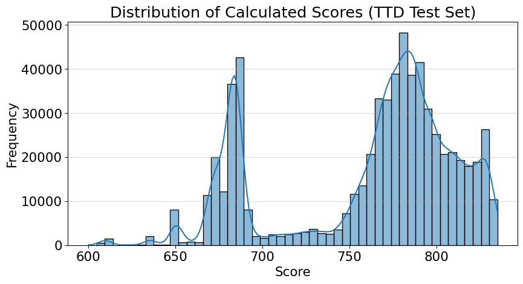
Figure 4: Distribution of Calculated Scores (TTD Test Set)
10.3 Build KS Table
Concept: In credit scorecards, the Kolmogorov-Smirnov (KS) statistic measures how well the scorecard separates “goods” (non-defaults) from “bads” (defaults). It quantifies the maximum difference between the cumulative distribution functions of the scores for the good and bad populations across different score ranges (bins). A higher KS value indicates better separation power of the scorecard.
A model with high KS would generate high PD predictions for defaulted loans and low PD predictions for non-defaulted loans. Ideally, the PD predictions from the two target classes should not overlap. While perfect separation is rarely achieved in practice, a high KS signifies the model is closer to this ideal.
Code
print("Generating KS table using scores and sample weights...")ks_results_table = ks_table( data=df_test_results, y_true_col='default_flag', y_pred_col='score', n_bins=20, is_score=True, sample_weight_col='sample_weight')display(ks_results_table)
Generating KS table using scores and sample weights...
KS Statistic (Max KS): 34.7001
Occurs in bin with range: [765.0000 - 770.0000]
Table 8: KS Table for Constrained Model on TTD Test Set
min_score
max_score
avg_score
count
bads
goods
bad_rate
cum_bads_pct
cum_goods_pct
ks
0
600
673
658.136531
16315.055037
10647.233302
5667.821735
0.652602
10.237546
1.264746
8.972801e+00
1
673
680
676.834238
16590.577015
10645.195248
5945.381766
0.641641
20.473133
2.591428
1.788171e+01
2
680
685
682.584660
15921.508600
7320.385827
8601.122773
0.459780
27.511843
4.510725
2.300112e+01
3
685
729
701.876468
16368.166721
6077.182292
10290.984430
0.371281
33.355186
6.807106
2.654808e+01
4
685
685
685.000000
16325.381303
7476.039896
8849.341407
0.457940
40.543561
8.781792
3.176177e+01
5
729
756
746.633545
24588.311324
6303.525704
18284.785620
0.256363
46.604539
12.861950
3.374259e+01
6
756
765
760.707241
30620.000000
6548.463954
24071.536046
0.213862
52.901029
18.233392
3.466764e+01
7
765
770
767.327108
31709.000000
6000.155091
25708.844909
0.189226
58.670309
23.970191
3.470012e+01
8
770
773
771.828319
32033.000000
5502.815389
26530.184611
0.171786
63.961385
29.890267
3.407112e+01
9
773
778
775.741528
31700.000000
5021.498933
26678.501067
0.158407
68.789666
35.843440
3.294623e+01
10
778
781
779.639311
32002.000000
4718.074400
27283.925600
0.147431
73.326197
41.931711
3.139449e+01
11
781
785
782.908026
31930.000000
4133.676427
27796.323573
0.129461
77.300817
48.134320
2.916650e+01
12
785
788
786.474959
32046.000000
4076.962849
27969.037151
0.127222
81.220905
54.375470
2.684544e+01
13
788
792
789.919680
32146.000000
3767.363955
28378.636045
0.117195
84.843308
60.708019
2.413529e+01
14
792
797
794.678167
32011.000000
3512.404412
28498.595588
0.109725
88.220561
67.067337
2.115322e+01
15
797
803
799.794645
32025.000000
3278.462576
28746.537424
0.102372
91.372874
73.481982
1.789089e+01
16
803
811
806.612016
31992.000000
2861.198181
29130.801819
0.089435
94.123978
79.982373
1.414161e+01
17
811
818
814.107738
31727.000000
2467.100371
29259.899629
0.077760
96.496149
86.511572
9.984577e+00
18
818
827
822.466066
31986.000000
2088.373678
29897.626322
0.065290
98.504166
93.183077
5.321089e+00
19
827
835
830.359831
32105.000000
1555.694689
30549.305311
0.048456
100.000000
100.000000
2.842171e-14
Plot cumulative bad rates and good rates to visualize the KS statistic.
Code
print("Plotting cumulative bad rates and good rates to visualize the KS statistic...")plt.figure(figsize=(10, 6))plt.plot(ks_results_table['cum_bads_pct'], label='Cumulative Bad Rate (%)', color='red', marker='o')plt.plot(ks_results_table['cum_goods_pct'], label='Cumulative Good Rate (%)', color='blue', marker='o')plt.fill_between(range(len(ks_results_table)), ks_results_table['cum_bads_pct'], ks_results_table['cum_goods_pct'], color='gray', alpha=0.2, label='KS Gap')# Highlight the maximum KS pointmax_ks_idx = ks_results_table['ks'].idxmax()max_ks_value = ks_results_table.loc[max_ks_idx, 'ks']plt.axvline(x=max_ks_idx, color='green', linestyle='--', label=f'Max KS = {max_ks_value:.2f}')# Set x-ticks to average score from each biny_pred_col_used ='score'# The column used in ks_table callavg_score_col_name =f'avg_{y_pred_col_used}'if avg_score_col_name in ks_results_table.columns: avg_scores = ks_results_table[avg_score_col_name] plt.xticks(ticks=range(len(avg_scores)), labels=[f"{score:.0f}"for score in avg_scores], rotation=45) plt.xlabel(f'Average {y_pred_col_used.capitalize()} (per Bin)') # Dynamic labelelse:print(f"Warning: Column '{avg_score_col_name}' not found in KS table for x-axis labels.") plt.xlabel('Bin Index') # Fallback labelplt.title('Cumulative Bad and Good Rates with KS Statistic')plt.ylabel('Cumulative Percentage (%)')plt.legend(loc='best')plt.grid(alpha=0.5)plt.tight_layout()plt.show()
Plotting cumulative bad rates and good rates to visualize the KS statistic...
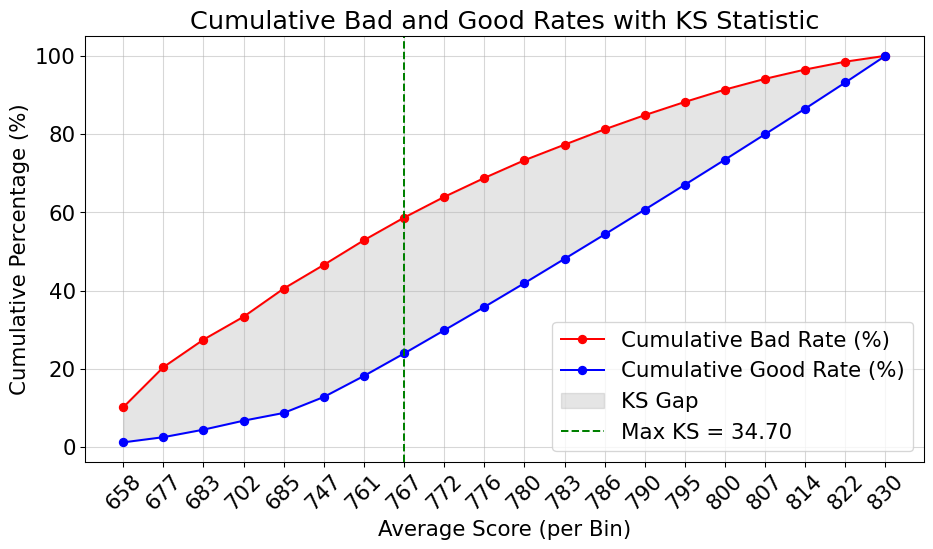
Figure 5: KS Plot: Cumulative Bad and Good Rates
Interpretation: A KS > 30 is often acceptable, > 40 good, > 50 excellent. These ranges are general guidelines often cited in the industry; the acceptable KS level depends heavily on the specific business context and application.
11 Decision Threshold Selection
11.1 Prepare Calibration Data for Thresholding
There are multiple methods to estimate the optimal decision threshold for binary classification. We explored some of those methods in previous lectures and labs:
Maximizing F1 score
Maximizing Profit
In this lab, we will use the score associated with the KS statistic.
We will use the calibration data set to estimate the threshold.
First, we need to construct the TTD data for the calibration data.
Code
df_accepted_calib_common = process_lending_data( df=df_accepted_calib, source_type='accepted', fillMissing_loanamnt=rejected_train_median_loan_amnt, # Use values derived from training fillMissing_emp_length=rejected_train_median_emp_length, fillMissing_dti=rejected_train_p90_dti, fillMissing_credit_score=rejected_train_p10_credit_score)df_rejected_calib_common = process_lending_data( df=df_rejected_calib, source_type='rejected', fillMissing_loanamnt=rejected_train_median_loan_amnt, # Use values derived from training fillMissing_emp_length=rejected_train_median_emp_length, fillMissing_dti=rejected_train_p90_dti, fillMissing_credit_score=rejected_train_p10_credit_score)# Create TTD Calibration Set using Fuzzy Augmentationprint("Creating TTD calibration set using RI model and Fuzzy Augmentation...")df_ttd_calib_full = create_TTD_data( ri_model=ri_model, df_rejected=df_rejected_calib_common, df_accepted=df_accepted_calib_common, ri_features=ri_features, # Features used by ri_model modeling_features=modeling_features, # Features to keep in the final TTD set target_col=target_col)print(f"TTD calibration set created. Shape: {df_ttd_calib_full.shape}")# Summarize the TTD Calibration Set by Source using helper functionsummary_default_rates_calib = summarize_ttd_by_source( df_ttd=df_ttd_calib_full, target_col=target_col, weight_col='sample_weight', source_col='source')
Table 9: Weighted default rates for TTD Calibration Data
Creating TTD calibration set using RI model and Fuzzy Augmentation...
Applying RI model to rejected data and calculating weights...
TTD dataset created. Shape: (652140, 7)
TTD calibration set created. Shape: (652140, 7)
--- Summarizing TTD Data by 'source' ---
Summary of Default Rates by Source:
source row_count unweighted_default_rate sum_weights \
0 Accepted 452140 0.128644 452140.0
1 Rejected 200000 0.500000 100000.0
weighted_default_rate
0 0.128644
1 0.459152
11.2 Determine Score Threshold using KS Table
Second, predict each applicant’s PD and convert to a score.
KS Statistic (Max KS): 34.4992
Occurs in bin with range: [765.0000 - 769.0000]
Table 10: KS Table for TTD Calibration Data
min_score
max_score
avg_score
count
bads
goods
bad_rate
cum_bads_pct
cum_goods_pct
ks
0
603
672
657.735762
16329.755492
10729.224945
5600.530547
0.657035
10.308608
1.249952
9.058657
1
672
680
676.687398
16566.830802
10594.445936
5972.384866
0.639497
20.487722
2.582896
17.904826
2
680
685
682.462079
15948.080755
7181.347606
8766.733150
0.450295
27.387540
4.539495
22.848045
3
685
685
685.000000
16293.509047
7767.658946
8525.850102
0.476733
34.850684
6.442332
28.408352
4
685
729
701.741252
16369.852938
5964.687482
10405.165455
0.364370
40.581539
8.764604
31.816934
5
729
756
746.484681
24485.970965
6194.294710
18291.676255
0.252973
46.532999
12.847023
33.685976
6
756
765
760.537952
30700.000000
6426.643379
24273.356621
0.209337
52.707700
18.264461
34.443239
7
765
769
767.225412
31826.000000
6046.530782
25779.469218
0.189987
58.517189
24.018039
34.499150
8
769
773
771.738338
31974.000000
5517.138438
26456.861562
0.172551
63.818040
29.922801
33.895239
9
773
778
775.610973
31718.000000
5012.559793
26705.440207
0.158035
68.634093
35.883042
32.751051
10
778
781
779.531849
31992.000000
4787.346858
27204.653142
0.149642
73.233762
41.954699
31.279063
11
781
785
782.771123
31930.000000
4123.017192
27806.982808
0.129127
77.195145
48.160787
29.034358
12
785
788
786.393504
32063.000000
4174.850924
27888.149076
0.130208
81.206330
54.384990
26.821340
13
788
792
789.821081
32081.000000
3686.513528
28394.486472
0.114913
84.748321
60.722200
24.026122
14
792
797
794.516730
31974.000000
3584.373350
28389.626650
0.112103
88.192177
67.058325
21.133852
15
797
803
799.625479
31995.000000
3230.779937
28764.220063
0.100978
91.296301
73.478053
17.818248
16
803
810
806.454964
32116.000000
2946.768176
29169.231824
0.091754
94.127547
79.988174
14.139373
17
810
818
814.012451
31690.000000
2484.635885
29205.364115
0.078404
96.514778
86.506359
10.008419
18
818
827
822.451253
31986.000000
2101.806890
29884.193110
0.065710
98.534188
93.176049
5.358140
19
827
835
830.360873
32101.000000
1525.620316
30575.379684
0.047526
100.000000
100.000000
0.000000
Based on the KS table for the calibration set, the maximum KS occurs in the bin starting at score 767. We will select 767 as our decision threshold (approve if score >= 767).
In order to simplify model predictions, we will convert the score of 767 into a probability and set the threshold inside AutoGluon.
Code
score_threshold =767PD_threshold = score_to_probability( score=score_threshold, pdo=user_pdo, base_score=user_basescore)ag_model_constrained_wrapped.predictor.set_decision_threshold(PD_threshold)ag_model_constrained_wrapped.predictor.save() # Save the model with the new threshold
11.3 Evaluate Model Decisions
Now let’s evaluate the threshold using the test set in a way that matches how the model would be used in production.
During training and calibration, we used sample weights and cloned the rejected applicants to correct for selection bias (since we don’t know their true outcomes). However, when scoring new applicants, we do not know their outcomes and do not use sample weights or cloning.
Therefore, to simulate production scoring, we will evaluate the model on the test set by setting all sample weights to 1 and including each applicant only once (no cloning of rejects).
Note that this evaluation differs from the weighted KS calculation in Section 8. There, we assessed the model’s ability to separate goods and bads according to the weighted distribution it was trained on. Here, we are simulating the practical application of the chosen score threshold (767) to new, individual applicants (without weighting or cloning) to see the resulting approval/rejection rates.
No RI model provided. Creating TTD data with uniform weights (sample_weight=1)...
TTD dataset created. Shape: (552141, 7)
Table 11: Sample of TTD Test Data (No Cloning)
loan_amnt
dti
credit_score
emp_length
default_flag
sample_weight
source
462725
1000.0
23.41
541.0
0
None
1.0
Rejected
260350
6600.0
21.34
667.0
0
0
1.0
Accepted
451716
23725.0
31.92
687.0
10
0
1.0
Accepted
489518
2500.0
0.00
541.0
0
None
1.0
Rejected
61945
11000.0
9.33
672.0
7
0
1.0
Accepted
We can score the applicants in the test set and determine how many applicants are accepted or rejected by the TTD model.
Code
df_ttd_test_noCloning['model_decision'] = ag_model_constrained_wrapped.predict( df_ttd_test_noCloning[ag_model_constrained_wrapped.feature_names_])df_ttd_test_noCloning['model_decision'] = df_ttd_test_noCloning['model_decision'].apply(lambda x: 'Model_Reject'if x==1else'Model_Approve')# Compare model decisions to actual outcomesprint("\n--- Comparing Model Decisions to Actual Outcomes ---")# Create a cross-tabulation of model decision vs actual outcomecomparison = pd.crosstab( df_ttd_test_noCloning['model_decision'], df_ttd_test_noCloning['source'], margins=True, margins_name='Total')print("\nCount of model decisions vs. actual outcomes:")display(comparison)
--- Comparing Model Decisions to Actual Outcomes ---
Count of model decisions vs. actual outcomes:
Table 12: Model Decisions on TTD Test Set (No Cloning)
source
Accepted
Rejected
Total
model_decision
Model_Approve
398733
8227
406960
Model_Reject
53408
91773
145181
Total
452141
100000
552141
12 Conclusion
In this lab, we built a credit scorecard using LendingClub data. We went through the entire process, from preparing the data to evaluating the final model and choosing a cutoff score. A key part was using data from rejected applications to make the model representative of the full applicant pool (this is called reject inference).
Key steps and takeaways:
Preparing Data: We loaded data for both approved and rejected loans, created useful features, and processed both datasets consistently.
Checking Feature Trends: We verified that features like Debt-to-Income (DTI) and credit score behaved as expected (e.g., higher credit score means lower risk). This ensures the model makes business sense.
Using Rejected Data (Reject Inference): We trained a simple model on approved loans to predict risk for rejected applicants. We then combined the approved and rejected data, assigning weights to the rejected applicants based on their predicted risk. This helps the main model learn from all applicants (Through-the-Door).
Training the Scorecard Model: We used AutoGluon to build the main model. We trained it twice: once normally, and a second time forcing it to follow the expected feature trends (monotonic constraints).
Understanding the Model: We used plots (PDP/ICE) to visualize how the model made predictions and to confirm it followed the trends we enforced.
Checking Performance: We tested the final model on data it hadn’t seen before, using metrics like AUC and the KS statistic. We also converted its risk predictions into easy-to-understand 3-digit scores.
Choosing a Cutoff Score: We used the KS statistic on a separate ‘calibration’ dataset to determine the minimum score needed for loan approval. We then checked how this cutoff performed on the test data.
Summary: This lab demonstrated a complete process for building a practical credit scorecard. By carefully preparing the data, checking feature relationships, including information from rejected applicants, and using tools like AutoGluon with constraints, we created a model that predicts risk accurately and aligns with business logic. These techniques are valuable for credit risk modeling and other areas where fairness and model understanding are crucial.
Source Code
---title: "Lab 02: Credit Scorecard Development"format: html: toc: true code-fold: true code-tools: true code-line-numbers: true page-layout: fullnumber-sections: truenumber-figures: truenumber-tables: trueexecute: warning: false message: false---# IntroductionThe lab provides a hands-on guide to building and evaluating a credit scorecard using loan-level (accepts) and applicant-level (rejects) data from LendingClub (an unsecured lender). The primary goal is to develop a 3-digit score that ranks Through-the-Door (TTD) applicants based on their predicted credit risk. We will use Fuzzy Augmentation (a reject inference method) to incorporate data from rejected applicants, to reduce selection bias in the training data.We will cover data preparation, assessing feature relationships, reject inference using fuzzy augmentation, training models with AutoGluon, diagnosing model behavior with ICE/PDP, applying monotonic constraints, evaluating performance using the KS statistic, and selecting decision thresholds.**Learning Objectives:*** Load and prepare accepted and rejected lending data.* Define a target variable for credit default.* Perform feature engineering and selection for scorecard modeling.* Assess feature monotonicity using binned probability plots.* Understand and implement reject inference (Fuzzy Augmentation).* Train weighted models using AutoGluon on the augmented TTD dataset.* Diagnose model behavior using ICE and PDP.* Apply monotonic constraints to align models with business logic.* Evaluate scorecard performance using the KS statistic.* Select an optimal decision threshold based on business objectives.# Setup## Import Python Libraries```{python}#| label: setup-imports#| message: false# System utilitiesimport osimport shutilimport randomimport sysimport warningsimport timeimport gcimport psutilfrom pathlib import Pathsys.path.insert(0, str(Path.cwd().parent))CPU_LIMIT =2os.environ['OMP_NUM_THREADS'] =str(CPU_LIMIT)os.environ['OPENBLAS_NUM_THREADS'] =str(CPU_LIMIT)os.environ['MKL_NUM_THREADS'] =str(CPU_LIMIT)os.environ['VECLIB_MAXIMUM_THREADS'] =str(CPU_LIMIT)os.environ['NUMEXPR_NUM_THREADS'] =str(CPU_LIMIT)num_jobs = CPU_LIMIT# Data manipulation and visualizationimport pandas as pdimport numpy as npimport matplotlib.pyplot as pltimport seaborn as snsfrom IPython.display import display # Explicit import for displayfrom scipy import stats, specialfrom sklearn.feature_selection import mutual_info_classifimport reimport duckdb# Machine learning - scikit-learnfrom sklearn.model_selection import train_test_splitfrom sklearn.linear_model import LogisticRegression, LogisticRegressionCVfrom sklearn.metrics import roc_auc_score, f1_score, confusion_matrix, classification_reportfrom sklearn.preprocessing import LabelEncoder, StandardScaler, OneHotEncoderfrom sklearn.impute import SimpleImputerfrom sklearn.pipeline import Pipelinefrom sklearn.compose import ColumnTransformerfrom sklearn.inspection import PartialDependenceDisplayfrom sklearn.base import BaseEstimator, ClassifierMixinfrom sklearn.utils.validation import check_is_fitted, check_X_y, check_arrayfrom sklearn import set_config# Specialized ML librariesfrom autogluon.tabular import TabularPredictor, TabularDatasetfrom autogluon.common.features.feature_metadata import FeatureMetadata # For monotonic constraintsimport shapfrom ydata_profiling import ProfileReport# Counterfactual Explanations (optional, install if needed: pip install dice-ml)try:import dice_mlfrom dice_ml.utils import helpers # Helper functions for DICEexceptImportError:print(""" dice-ml not found. You need to update your conda env by running: conda activate env_AutoGluon_202502 conda install -c conda-forge dice-ml """) dice_ml =None# Helper functions from course_utils.helpersfrom course_utils.helpers import ( global_set_seed, remove_ag_folder, AutoGluonSklearnWrapper, binned_prob_plot, calculate_score, score_to_probability, ks_table, show_pdp, generate_eda_report, parse_emp_length, split_data, train_autogluon_model, summarize_ttd_by_source, create_TTD_data)# Settingspd.set_option('display.max_columns', 50)pd.set_option('display.max_rows', 100)warnings.filterwarnings('ignore', category=FutureWarning) # Suppress specific FutureWarningsset_config(transform_output="pandas") # Set sklearn output to pandasprint("Libraries imported successfully.")```# Data Loading & EDA**Goal:** Load the LendingClub accepted and rejected datasets, define the target variable (`default_flag`), split the data, and perform basic EDA.## Read Parquet FilesLoad the datasets containing information on accepted loans and rejected applications.```{python}#| label: data-load# Define file paths relative to the current script locationaccepted_path ='../Data/lendingclub/accepted_2007_to_2018Q4.parquet'rejected_path ='../Data/lendingclub/rejected_2007_to_2018Q4.parquet'# Load data using pandastry: df_accepted = pd.read_parquet(accepted_path) df_rejected = pd.read_parquet(rejected_path)# Sample rejected data to reduce memory usage max_rejected_rows =500_000 df_rejected = df_rejected.sample(n=max_rejected_rows, random_state=2025)print("Data loaded successfully.")print(f"Accepted data shape: {df_accepted.shape}")print(f"Rejected data shape: {df_rejected.shape}")exceptFileNotFoundError:print("Error: Parquet files not found. Make sure the paths are correct and the data generation scripts have been run.")# Stop execution or handle error appropriately df_accepted, df_rejected =None, None# Set to None to avoid errors later```## Define Target VariableCreate the binary `default_flag` (1 for default, 0 for non-default) based on the `loan_status` in the accepted dataset. Rejected applicants do not have an observed `default_flag`.```{python}#| label: define-target# Define default status based on 'loan_status'default_statuses = ["Charged Off", "Late (31-120 days)", "Does not meet the credit policy. Status:Charged Off", "Default"] df_accepted['default_flag'] = df_accepted['loan_status'].apply(lambda x: 1if x in default_statuses else0)print("Target variable 'default_flag' created.")print("Default Flag Distribution (Accepted):")print(df_accepted['default_flag'].value_counts(normalize=True))# Display loan status counts for contextprint("\nLoan Status Distribution (Accepted):")print(df_accepted['loan_status'].value_counts())```## Train, Calibration, and Test SplitSplit both accepted and rejected datasets into training (60%), calibration (20%), and test (20%) sets. We use stratification for the accepted data based on the `default_flag` to maintain similar default rates across splits.```{python}#| label: train-test-split# Define split proportionstrain_size =0.6calib_size_rel_to_remaining =0.5# 0.5 * (1 - 0.6) = 0.2 -> test_size for split_datarandom_seed =2025global_set_seed(random_seed) # Set global seed# --- Split Accepted Data (Stratified) ---print("Splitting Accepted Data...")df_accepted_train, df_accepted_calib, df_accepted_test = split_data( df=df_accepted, target_col='default_flag', train_size=train_size, calib_size_rel=calib_size_rel_to_remaining, # This is test_size in split_data context random_state=random_seed)# --- Split Rejected Data (Not Stratified) ---print("\nSplitting Rejected Data...")df_rejected_train, df_rejected_calib, df_rejected_test = split_data( df=df_rejected, target_col=None, # No stratification train_size=train_size, calib_size_rel=calib_size_rel_to_remaining, # This is test_size in split_data context random_state=random_seed)# Clean up the original large dataframesdel df_accepteddel df_rejectedprint("\nRemoved original df_accepted and df_rejected to free up memory.")gc.collect() # Call garbage collector```## Exploratory Data Analysis (EDA)Perform initial EDA on the *training* portions of the accepted and rejected datasets to understand distributions, missing values, and potential issues. We use `ydata-profiling` for automated report generation.```{python}#| label: eda-accepted-rejectedprint("Generating EDA reports (this might take a while)...")# Define sampling fraction for large datasetsp_frac =0.05# Sample 5% for faster report generation# --- EDA for Accepted Training Data ---generate_eda_report( df=df_accepted_train, title="Accepted Train Data Profile", output_path="Lab02_eda_report_accepted_train.html", sample_frac=p_frac, random_state=random_seed)# --- EDA for Rejected Training Data ---generate_eda_report( df=df_rejected_train, title="Rejected Train Data Profile", output_path="Lab02_eda_report_rejected_train.html", sample_frac=p_frac, random_state=random_seed)```# Monotonicity Checks**Goal:** Process the raw data to create a set of common features present in both accepted and rejected datasets. Then, analyze the relationship between these features and the default outcome (using accepted data) to check for expected monotonic trends.## Identify and Process Common FeaturesSelect relevant features, rename columns for consistency, handle missing values, and perform necessary transformations (e.g., parsing employment length, calculating FICO score).```{python}#| label: common-features# Define common feature names globallycommon_feature_names = ['loan_amnt', 'emp_length', 'addr_state', 'dti', 'credit_score']target_col ='default_flag'# Remove non-numeric chars from dti in df_rejected_traindf_rejected_train['Debt-To-Income Ratio'] = df_rejected_train['Debt-To-Income Ratio'].astype(str).str.replace(r'[^0-9\.\-]', '', regex=True)df_rejected_train['Debt-To-Income Ratio'] = pd.to_numeric(df_rejected_train['Debt-To-Income Ratio'], errors='coerce')rejected_train_median_loan_amnt = df_rejected_train['Amount Requested'].median(skipna=True)rejected_train_median_emp_length = df_rejected_train['Employment Length'].apply(parse_emp_length).median(skipna=True)rejected_train_p90_dti = df_rejected_train['Debt-To-Income Ratio'].quantile(0.90, interpolation='nearest')rejected_train_p10_credit_score = df_rejected_train['Risk_Score'].quantile(0.10, interpolation='nearest')def process_lending_data(df: pd.DataFrame, source_type: str, fillMissing_loanamnt: int, fillMissing_emp_length: int, fillMissing_dti: float, fillMissing_credit_score: int) -> pd.DataFrame |None:""" Processes LendingClub data (accepted or rejected) to extract common features. This function standardizes column names, handles missing values, transforms data types, and applies validations to ensure consistent data formats across accepted and rejected loan applications. Args: df (pd.DataFrame): Input DataFrame (either accepted or rejected). source_type (str): 'accepted' or 'rejected'. fillMissing_loanamnt (int): Value to fill missing loan amount entries. fillMissing_emp_length (int): Value to fill missing employment length entries. fillMissing_dti (float): Value to fill missing debt-to-income ratio entries. fillMissing_credit_score (int): Value to fill missing credit score entries. Returns: pd.DataFrame | None: Processed DataFrame with common features (and target for accepted), or None if input df is None. Raises: ValueError: If source_type is not 'accepted' or 'rejected'. """if df isNone:returnNone df_proc = df.copy()# Column mapping and credit_score logicif source_type =='accepted': rename_map = {'loan_amnt': 'loan_amnt','emp_length': 'emp_length','addr_state': 'addr_state','dti': 'dti','fico_range_low': 'fico_range_low','fico_range_high': 'fico_range_high' }elif source_type =='rejected': rename_map = {'Amount Requested': 'loan_amnt','Employment Length': 'emp_length','State': 'addr_state','Debt-To-Income Ratio': 'dti','Risk_Score': 'credit_score' }else:raiseValueError("source_type must be 'accepted' or 'rejected'")# Warn if missing columns missing_cols = [col for col in rename_map.keys() if col notin df_proc.columns]if missing_cols:print(f"Warning: Missing columns in {source_type} data: {missing_cols}") df_proc = df_proc.rename(columns=rename_map)# loan_amnt df_proc['loan_amnt'] = pd.to_numeric(df_proc.get('loan_amnt'), errors='coerce').fillna(fillMissing_loanamnt).clip(lower=500)# emp_length df_proc['emp_length'] = df_proc.get('emp_length').apply(parse_emp_length).fillna(fillMissing_emp_length) # dti dti_series = df_proc.get('dti').astype(str).str.replace(r'[^0-9\.\-]', '', regex=True) df_proc['dti'] = pd.to_numeric(dti_series, errors='coerce').fillna(fillMissing_dti).astype("float32").clip(lower=0, upper=300)# credit_scoreif source_type =='accepted':# Use FICO if available, else fallbackif'fico_range_low'in df_proc.columns and'fico_range_high'in df_proc.columns: df_proc['credit_score'] = (df_proc['fico_range_low'] + df_proc['fico_range_high']) /2else: df_proc['credit_score'] = np.nan df_proc['credit_score'] = df_proc['credit_score'].fillna(fillMissing_credit_score).clip(lower=300, upper=850)else: df_proc['credit_score'] = pd.to_numeric(df_proc.get('credit_score'), errors='coerce').fillna(fillMissing_credit_score).clip(lower=300, upper=850)# Target column for acceptedif source_type =='accepted':if target_col notin df_proc.columns:print(f"Warning: Target column '{target_col}' not found in accepted data. Adding placeholder.") df_proc[target_col] =0 cols_to_keep = [col for col in common_feature_names if col in df_proc.columns] + [target_col]else: cols_to_keep = [col for col in common_feature_names if col in df_proc.columns]return df_proc[cols_to_keep].copy()# --- Apply the function to the training data ---print("Processing training data using the defined function...")df_accepted_train_common = process_lending_data( df=df_accepted_train, source_type='accepted', fillMissing_loanamnt=rejected_train_median_loan_amnt, fillMissing_emp_length=rejected_train_median_emp_length, fillMissing_dti=rejected_train_p90_dti, fillMissing_credit_score=rejected_train_p10_credit_score)df_rejected_train_common = process_lending_data( df=df_rejected_train, source_type='rejected', fillMissing_loanamnt=rejected_train_median_loan_amnt, fillMissing_emp_length=rejected_train_median_emp_length, fillMissing_dti=rejected_train_p90_dti, fillMissing_credit_score=rejected_train_p10_credit_score)print(f"Accepted training data processed. Shape: {df_accepted_train_common.shape}")# Verify common features are presentmissing_acc = [f for f in common_feature_names if f notin df_accepted_train_common.columns]if missing_acc: print(f" Warning: Missing common features after processing accepted: {missing_acc}")print(f"Rejected training data processed. Shape: {df_rejected_train_common.shape}")# Verify common features are presentmissing_rej = [f for f in common_feature_names if f notin df_rejected_train_common.columns]if missing_rej: print(f" Warning: Missing common features after processing rejected: {missing_rej}")print("\nCommon features expected:")print(common_feature_names)```Check dtypes```{python}#| label: tbl-train-dtypes#| tbl-cap: "Data types in each data frame"# Convert .info() output to DataFrame for accepted training dataaccepted_info = pd.DataFrame({"column": df_accepted_train_common.columns,"dtype": [df_accepted_train_common[col].dtype for col in df_accepted_train_common.columns],"null_count": [df_accepted_train_common[col].isnull().sum() for col in df_accepted_train_common.columns],"non_null_count": [df_accepted_train_common[col].notnull().sum() for col in df_accepted_train_common.columns],"unique_count": [df_accepted_train_common[col].nunique() for col in df_accepted_train_common.columns]})display(accepted_info)# Convert .info() output to DataFrame for rejected training datarejected_info = pd.DataFrame({"column": df_rejected_train_common.columns,"dtype": [df_rejected_train_common[col].dtype for col in df_rejected_train_common.columns],"null_count": [df_rejected_train_common[col].isnull().sum() for col in df_rejected_train_common.columns],"non_null_count": [df_rejected_train_common[col].notnull().sum() for col in df_rejected_train_common.columns],"unique_count": [df_rejected_train_common[col].nunique() for col in df_rejected_train_common.columns]})display(rejected_info)```## Compare Data DistributionsCompare data distributions between `df_accepted_train_common` and `df_rejected_train_common` using `ProfileReport`.```{python}#| label: eda-compare-common# Check if dataframes and ProfileReport existif'df_accepted_train_common'inlocals() and df_accepted_train_common isnotNoneand\'df_rejected_train_common'inlocals() and df_rejected_train_common isnotNoneand\'ProfileReport'inlocals() and ProfileReport isnotNone:print("Generating comparison report for common features (this might take a while)...")# Define sampling fraction for faster report generation p_frac_compare =0.1# Sample 10% for comparisontry:# Profile for Accepted Common Features accepted_common_profile = ProfileReport( df_accepted_train_common.sample(frac=p_frac_compare, random_state=2025), title="Accepted Train", progress_bar=False, duplicates=None, interactions=None )# Profile for Rejected Common Features rejected_common_profile = ProfileReport( df_rejected_train_common.sample(frac=p_frac_compare, random_state=2025), title="Rejected Train", progress_bar=False, duplicates=None, interactions=None )# Compare the two profiles comparison_report = accepted_common_profile.compare(rejected_common_profile)# Save the comparison report comparison_report_path ="Lab02_eda_report_compare_common_features.html" comparison_report.to_file(comparison_report_path)print(f"Comparison report saved to: {comparison_report_path}")exceptExceptionas e:print(f"Error generating comparison report: {e}")else:print("Skipping comparison report generation: Required dataframes or ProfileReport not available.")```## Assess Feature Monotonicity (Accepted Data)**Concept:** Before building complex models, it's essential to understand the fundamental relationship between key features and the target variable (probability of default). We expect certain features to have a monotonic relationship with risk – meaning, as the feature value increases, the risk should consistently increase or consistently decrease.* **Example:** We expect higher Debt-to-Income (`dti`) ratios to correspond to higher default risk (monotonic increasing). We expect higher credit scores (`credit_score`) to correspond to lower default risk (monotonic decreasing).**Method:** We use the `binned_prob_plot` function on the *accepted training data* (`df_accepted_train_common`) to visualize the average default rate across bins of each feature.* For **continuous features**, the plot shows the trend across quantiles, and we calculate the **Spearman rank correlation** between the bin rank and the default rate (or log-odds). A correlation near +1 (increasing) or -1 (decreasing) suggests strong monotonicity.* For **categorical features**, the plot shows the default rate per category, and we calculate **Mutual Information** to measure if the feature provides information about the target, indicating varying risk levels across categories.**Goal:** Visualize the relationship between selected common features (`loan_amnt`, `dti`, `credit_score`, `emp_length`) and `default_flag` using the accepted training data. Check if the observed trends align with business intuition.```{python}#| label: fig-check-monotonicity-accepted#| fig-cap: "Binned probability plots for the accept population."%matplotlib inlineif'df_accepted_train_common'inlocals() and df_accepted_train_common isnotNone:print("--- Assessing Monotonicity on Accepted Training Data ---") features_to_plot = ['loan_amnt', 'dti', 'credit_score', 'emp_length'] monotonicity_results_accepted = []for feature in features_to_plot:if feature in df_accepted_train_common.columns:print(f"\nPlotting for feature: {feature}") output = binned_prob_plot( data=df_accepted_train_common, feature=feature, target_binary='default_flag', cont_feat_flag=True ) monotonicity_results_accepted.append(output)print(f" Measure ({output['measure_name']}): {output['measure_value']:.4f}")if output['p_value'] isnotNone:print(f" P-value: {output['p_value']:.4f}")else:print(f"\nSkipping plot for feature '{feature}' as it's not in df_accepted_train_common.")print("\n--- Monotonicity Assessment Summary (Accepted Data) ---")for res in monotonicity_results_accepted: pval_str =f", p-value: {res['p_value']:.4f}"if res['p_value'] isnotNoneelse""print(f"Feature: {res['feature']}, Measure: {res['measure_name']}, Value: {res['measure_value']:.4f}{pval_str}")else:print("Skipping monotonicity check as df_accepted_train_common is not available.")```**Interpretation:** Based on the binned probability plots:- **loan_amnt:** Higher loan amounts are associated with higher default rates, indicating a positive correlation.- **dti:** Higher Debt-to-Income ratios correlate with higher default rates, confirming the expected monotonic relationship.- **credit_score:** Higher credit scores are associated with lower default rates, indicating a negative correlation.- **emp_length:** Higher employment lengths are associated with lower default rates, which is expected.**Categorical Feature Check (State):**For high-cardinality categorical features like `addr_state`, visualizing the binned probability might be less informative due to the large number of categories. However, we can still calculate the Mutual Information (MI) score to quantify the relationship between the state and the default flag without generating the plot. A higher MI suggests the state provides more information about the likelihood of default.```{python}#| label: check-monotonicity-state%matplotlib inlineif'df_accepted_train_common'inlocals() and df_accepted_train_common isnotNone: feature_state ='addr_state'if feature_state in df_accepted_train_common.columns:print(f"\n--- Calculating Mutual Information for {feature_state} (Accepted Data) ---")# Calculate MI without plotting state_mi_output = binned_prob_plot( data=df_accepted_train_common, feature=feature_state, target_binary='default_flag', cont_feat_flag=False, # Explicitly categorical show_plot=False# Do not generate the plot )print(f"Feature: {state_mi_output['feature']}")print(f" Measure: {state_mi_output['measure_name']}")print(f" Value: {state_mi_output['measure_value']:.4f}")# Store result if needed# monotonicity_results_accepted.append(state_mi_output) else:print(f"\nSkipping MI calculation for feature '{feature_state}' as it's not in df_accepted_train_common.")else:print("\nSkipping MI calculation for 'addr_state' as df_accepted_train_common is not available.")```Mutual Information for `addr_state` is calculated, but the plot is not generated due to the high cardinality of the feature. The MI value is very close to zero.## Define Modeling FeaturesIn subsequent sections, we will use only the following features: `loan_amnt`, `dti`, `credit_score`, and `emp_length` for modeling. The `addr_state` feature will be excluded from the modeling process due to low mutual information.```{python}#| label: define-modeling-featuresmodeling_features = ['loan_amnt', 'dti', 'credit_score', 'emp_length']print(f"Features selected for modeling: {modeling_features}")```# Fuzzy Augmentation**Concept:** Models trained only on accepted applicants (KGB - Known Good/Bad) suffer from selection bias because they don't learn from the rejected population, which often represents higher risk. Reject Inference (RI) techniques address this by incorporating information from rejects.**Fuzzy Augmentation:**1. Train a model (e.g., Logistic Regression) on the *accepted training data* (`df_accepted_train_common`) to predict the probability of default (PD), `PD = P(default=1 | features)`.2. Apply this model to the *rejected* applicants to get their predicted `PD`.3. Create two copies of the rejected applicant data: 1. **Copy 1 (Assumed Bad):** Assign `default_flag = 1` and `sample_weight = PD`. 2. **Copy 2 (Assumed Good):** Assign `default_flag = 0` and `sample_weight = 1 - PD`.4. Combine the original accepted data (with `sample_weight = 1`) and the two weighted sets of rejected data to create the augmented "Through-the-Door" (TTD) dataset. This approach assigns fractional counts to both default and non-default outcomes for each rejected applicant based on their predicted risk.**Goal:** Implement fuzzy augmentation to create the TTD training dataset.## Train Initial Model for WeightingTrain a Logistic Regression model on the *accepted training data* (`df_accepted_train_common`) using a subset of the common features. This model estimates the PD needed for weighting.```{python}#| label: ri-train-logit# Using only features selected for the main model for consistency in RIri_features = modeling_features print(f"Using RI features (same as modeling features): {ri_features}")# Prepare data for Logistic Regression - use .copy() to avoid SettingWithCopyWarningX_acc_ri = df_accepted_train_common[ri_features].copy()y_acc_ri = df_accepted_train_common['default_flag'] # Basic Preprocessing Pipeline for Logistic Regression# All ri_features are numeric nownumeric_features_ri = ri_features # Use the selected features# Define preprocessing stepsnumeric_transformer_ri = Pipeline(steps=[ ('scaler', StandardScaler())])# Create the preprocessor - Apply the numeric transformer to the numeric featurespreprocessor_ri = ColumnTransformer( transformers=[ ('num', numeric_transformer_ri, numeric_features_ri) ], remainder='passthrough'# Keep other columns if any (though there shouldn't be here))# Define LogisticRegressionCV with cross-validation parameterslogreg_cv = LogisticRegressionCV( Cs=10, # Try 10 C values on a logarithmic scale cv=5, # Use 5-fold cross-validation penalty='l2', # Use L2 regularization scoring='roc_auc', # Optimize for AUC random_state=2025, max_iter=1000, # Increase max iterations for convergence solver='liblinear'# Suitable solver for this problem size and penalty)# Create the full pipeline with Logistic Regression CVri_model = Pipeline(steps=[('preprocessor', preprocessor_ri), ('classifier', logreg_cv)]) # Use LogisticRegressionCVglobal_set_seed(random_seed) # Set global seedprint("Training Reject Inference Logistic Regression model...")start_time = time.time()ri_model.fit(X_acc_ri, y_acc_ri)end_time = time.time()print(f"RI model training completed in {end_time - start_time:.2f} seconds.")```## Check RI Model Coefficients**Goal:** After training the RI model, we need to check the coefficients to ensure they align with our expectations based on the monotonicity checks. This helps validate that the model is capturing the expected relationships between features and default risk.Check the `ri_model` (also known as the KGB model) to ensure the coefficients are reasonable.```{python}#| label: tbl-ri-model-coefficients#| tbl-cap: "Reject Inference Model Coefficients"print("\n--- RI Model Coefficients ---")# Extract coefficients and intercept from the Logistic Regression modelifhasattr(ri_model.named_steps['classifier'], 'coef_') and\hasattr(ri_model.named_steps['classifier'], 'intercept_'): coeffs = ri_model.named_steps['classifier'].coef_[0] # Get the coefficients intercept = ri_model.named_steps['classifier'].intercept_[0] # Get the intercept# Get feature names from the preprocessor step if possibletry:# Access the fitted ColumnTransformer to get output feature names preprocessor = ri_model.named_steps['preprocessor']# Get feature names after transformation (e.g., scaled numeric features)# Note: This relies on the structure of the preprocessor feature_names = preprocessor.get_feature_names_out()exceptException:# Fallback to original feature names if getting transformed names failsprint("Warning: Could not get transformed feature names. Using original RI feature names.") feature_names = ri_features # Use the original input feature names# Create DataFrame for coefficients coeff_df = pd.DataFrame({'Feature': feature_names, 'Coefficient': coeffs})# Add the intercept as a separate row intercept_df = pd.DataFrame({'Feature': ['Intercept'], 'Coefficient': [intercept]})# Combine coefficients and intercept full_coeff_df = pd.concat([intercept_df, coeff_df], ignore_index=True)# Sort by absolute coefficient value might be more informative, but sorting by value is fine# full_coeff_df.sort_values(by='Coefficient', ascending=False, inplace=True) display(full_coeff_df)```**Interpretation:** The coefficients of the RI model should align with our expectations based on the monotonicity checks. For example, we expect a positive coefficient for `dti` (higher DTI leads to higher default risk) and a negative coefficient for `credit_score` (higher credit score leads to lower default risk).## Calculate Weights and Create TTD DatasetApply the trained `ri_model` to the *rejected training data* (`df_rejected_train_common`), calculate fuzzy weights, assign `default_flag=1`, and combine with `df_accepted_train_common` to create `df_ttd_train`.```{python}#| label: tbl-ri-apply-weights#| tbl-cap: "Weighted default rates for TTD Train Data"print("Applying RI model to rejected training data and calculating weights...")# Create df_ttd_train with the source columndf_ttd_train = create_TTD_data( # Renamed variable ri_model=ri_model, df_rejected=df_rejected_train_common, df_accepted=df_accepted_train_common, ri_features=ri_features, modeling_features=modeling_features, target_col=target_col)# Calculate and display summary statistics by source using helper functionsummary_default_rates = summarize_ttd_by_source( df_ttd=df_ttd_train, target_col=target_col, weight_col='sample_weight', source_col='source')```For rejected applicants in the TTD dataset, the `default_flag` and `sample_weight` are not observed outcomes. Instead, they are assigned based on the RI model's predicted probability of default (PD). Each rejected applicant is represented twice: once as an assumed default (`default_flag=1`, weighted by PD) and once as an assumed non-default (`default_flag=0`, weighted by 1-PD). This approach reflects the model's belief about their likely outcome, rather than an actual observed default status.```{python}#| label: tbl-ttd-sample#| tbl-cap: "Sample of Augmented TTD Training Data (Fuzzy Augmentation)"df_sample = df_ttd_train.sample(10, random_state=2025)display(df_sample)```# Building the TTD Scorecard Model (Initial)**Goal:** Train a preliminary scorecard model using AutoGluon on the augmented TTD training dataset (`df_ttd_train`). This model will incorporate the `sample_weight` calculated during reject inference but will *not* yet have monotonic constraints applied.## Configure and Train AutoGluon ModelSet up AutoGluon to train on the TTD data, specifying the label (`default_flag`), sample weight column, and excluding complex models like Neural Networks to favor interpretability.Sample weights are used only during the fit() process to influence how the model learns from the training data. Once the model is trained, predictions are made based solely on the input features the model learned from. You only need to provide the feature columns in the DataFrame passed to `predict()` or `predict_proba()`.```{python}#| label: tbl-ttd-modeling-initial#| tbl-cap: "Leaderboard for initial TTD Model"label ='default_flag'weight_col ='sample_weight'# --- AutoGluon Configuration ---model_folder_ttd_initial ='./Lab02_ag_models_TTD_Initial'# Hyperparameters: Limit tree depth for simplicity and interpretabilitycustom_hyperparameters = {'GBM': {'num_boost_round': 10000, 'num_leaves': 4},'CAT': {'iterations': 10000, 'depth': 2}}excluded_model_types = ['NN_TORCH', 'FASTAI', 'KNN'] # Arguments for TabularPredictor initialization (passed via wrapper)predictor_args = {'problem_type': 'binary','eval_metric': 'roc_auc', 'path': model_folder_ttd_initial,'sample_weight': weight_col # key parameter for Fuzz Augmentation}# Arguments for TabularPredictor.fit (passed via wrapper)fit_args = {'presets': {'holdout_frac': 0.2,'excluded_model_types': excluded_model_types,'hyperparameters': custom_hyperparameters, 'time_limit': 300 },'num_cpus': num_jobs}global_set_seed(random_seed) # Set global seed# Train model using the helper functionag_model_initial_wrapped = train_autogluon_model( df_train=df_ttd_train, label=label, weight_col=weight_col, modeling_features=modeling_features, # Use derived features list model_folder=model_folder_ttd_initial, predictor_args=predictor_args, fit_args=fit_args)# Access the underlying predictor for leaderboard etc. (optional, as helper prints it)ag_predictor_initial = ag_model_initial_wrapped.predictor```# Initial Model Diagnostics (PDP/ICE)**Goal:** Analyze the behavior of the *initial, unconstrained* TTD model. Use Partial Dependence Plots (PDP) and Individual Conditional Expectation (ICE) plots to understand how the model's predictions change on average (PDP) and for individual instances (ICE) as key feature values vary. This helps identify if the model learned relationships that contradict business logic (e.g., non-monotonic trends).```{python}#| label: fig-pdp-ice-initial#| fig-cap: "PDP/ICE plots for the initial TTD model"%matplotlib inline# Get all features from ag_model.predictorall_features = ag_model_initial_wrapped.predictor.features()# Get categorical features from ag_model.predictor's feature metadatacategorical_features = ag_model_initial_wrapped.predictor.feature_metadata.get_features(valid_raw_types=['category'])# Get numeric features from ag_model.predictor's feature metadatanumeric_features = ag_model_initial_wrapped.predictor.feature_metadata.get_features(valid_raw_types=['int', 'float', 'int64', 'float64', 'int32', 'float32'])show_pdp(wrappedAGModel = ag_model_initial_wrapped, list_features = all_features, list_categ_features = categorical_features if categorical_features elseNone, df = df_ttd_train.drop(columns=[label, weight_col]), show_ice=True, sampSize=25_000, n_jobs=num_jobs )```**Interpretation:** Examine the PDP (red dashed line) and ICE (thin blue lines) for each feature:- Does `loan_amnt` consistently increase the predicted probability?- Does `dti` consistently increase the predicted probability?- Does `credit_score` consistently decrease the predicted probability?If any of these plots show non-monotonic behavior (e.g., the average trend goes up then down, or vice-versa), it violates our business intuition and suggests that applying monotonic constraints is necessary. The ICE lines show if this behavior is consistent across all samples or if there's significant heterogeneity.# Applying Monotonic Constraints**Concept:** Monotonic constraints force the model to learn relationships that align with business expectations. We specify whether a feature should have a non-decreasing (+) or non-increasing (-) relationship with the target probability. AutoGluon passes these constraints to underlying models that support them (like LightGBM, XGBoost).**Goal:** Define monotonic constraints based on business logic (e.g., `dti` increases risk, `credit_score` decreases risk) and retrain the AutoGluon model on the TTD data with these constraints enforced.## Define Constraints and Retrain ModelSpecify the desired monotonic relationship for key features using AutoGluon's `feature_metadata` and retrain the model.```{python}#| label: tbl-monotonic-constraints-setup-train#| tbl-cap: "Leaderboard for constrained TTD Model"print("Training constrained AutoGluon model with monotonic constraints via hyperparameters...")# Define monotonic constraints for boosting modelsmonotone_constraints_dict = {'loan_amnt': 1, 'dti': 1, 'credit_score': -1, 'emp_length': -1}monotone_constraints_ordered = [monotone_constraints_dict.get(f, 0) for f in all_features] # Default to 0 if feature not in dict# Update hyperparameters to include monotonic constraintscustom_hyperparameters_constrained = {'GBM': {**custom_hyperparameters['GBM'], 'monotone_constraints': monotone_constraints_ordered},'CAT': {**custom_hyperparameters['CAT'], 'monotone_constraints': monotone_constraints_dict} # CatBoost uses dict}# Clean up previous model foldermodel_folder_ttd_constrained ='./Lab02_ag_models_TTD_Constrained'# Prepare predictor and fit arguments (reuse from initial, update path and hyperparameters)predictor_args_constrained = predictor_args.copy()predictor_args_constrained['path'] = model_folder_ttd_constrainedfit_args_constrained = {'presets': {'hyperparameters': custom_hyperparameters_constrained,'excluded_model_types': excluded_model_types,'holdout_frac': 0.2,'time_limit': 300 },'num_cpus': num_jobs}global_set_seed(random_seed) # Set global seed# Train constrained model using the helper functionag_model_constrained_wrapped = train_autogluon_model( df_train=df_ttd_train, label=label, weight_col=weight_col, modeling_features=modeling_features, # Use features from initial model model_folder=model_folder_ttd_constrained, predictor_args=predictor_args_constrained, fit_args=fit_args_constrained)# Access the underlying predictor (optional, as helper prints leaderboard)ag_predictor_constrained = ag_model_constrained_wrapped.predictor```# Verifying Constraints (PDP/ICE)**Goal:** Re-run the PDP/ICE plots on the *constrained* model to visually confirm that the specified monotonic relationships for `loan_amnt`, `dti`, and `credit_score` are now enforced.```{python}#| label: fig-pdp-ice-constrained#| fig-cap: "PDP/ICE plots for the constrained TTD model"print("Generating PDP/ICE plots for the constrained model to verify monotonic behavior...")# Extract feature lists from the constrained predictorall_features_constrained = ag_model_constrained_wrapped.predictor.features()categorical_features_constrained = ag_model_constrained_wrapped.predictor.feature_metadata.get_features(valid_raw_types=['category'])# Prepare DataFrame for plotting (drop label and weight)plot_df_constrained = df_ttd_train.drop(columns=[label, weight_col])# Display PDP/ICE using the helpershow_pdp( wrappedAGModel=ag_model_constrained_wrapped, list_features=all_features_constrained, list_categ_features=categorical_features_constrained if categorical_features_constrained elseNone, df=plot_df_constrained, show_ice=True, sampSize=25_000, n_jobs=num_jobs)```**Interpretation:** Carefully examine the PDP curves (red dashed lines) for `loan_amnt`, `dti`, and `credit_score`. They should now exhibit the enforced monotonic behavior: non-decreasing for `loan_amnt` and `dti`, and non-increasing for `credit_score`. If the curves are flat or follow the expected trend without reversals, the constraints have been successfully applied.# Evaluation & Scoring the Test Set**Goal:** Evaluate the performance of the final *constrained* model on the held-out TTD test set. Convert predicted PDs into a 3-digit scores and analyze the results using a KS table.## Prepare Test Set and Evaluate**Goal:** Apply the same feature processing steps used for the training data to the *accepted* and *rejected* test sets. For the rejected applicants, use the `ri_model` to estimate their reject inference weights. Combine the accepted and rejected test sets, ensuring that the `sample_weight` is set to 1 for accepted applicants and the rejected inference weights are used for rejected applicants.```{python}#| label: tbl-test-weighted-default-rates#| tbl-cap: "Weighted default rates for TTD Test Data"print("--- Preparing TTD Test Set ---")# 1. Process Accepted Test Dataprint("Processing accepted test data...")df_accepted_test_common = process_lending_data( df=df_accepted_test, source_type='accepted', fillMissing_loanamnt=rejected_train_median_loan_amnt, # Use values derived from training fillMissing_emp_length=rejected_train_median_emp_length, fillMissing_dti=rejected_train_p90_dti, fillMissing_credit_score=rejected_train_p10_credit_score)# 2. Process Rejected Test Dataprint("Processing rejected test data...")df_rejected_test_common = process_lending_data( df=df_rejected_test, source_type='rejected', fillMissing_loanamnt=rejected_train_median_loan_amnt, # Use values derived from training fillMissing_emp_length=rejected_train_median_emp_length, fillMissing_dti=rejected_train_p90_dti, fillMissing_credit_score=rejected_train_p10_credit_score)# 3. Create TTD Test Set using Fuzzy Augmentationprint("Creating TTD test set using RI model and Fuzzy Augmentation...")df_ttd_test_full = create_TTD_data( ri_model=ri_model, df_rejected=df_rejected_test_common, df_accepted=df_accepted_test_common, ri_features=ri_features, # Features used by ri_model modeling_features=modeling_features, # Features to keep in the final TTD set target_col=target_col)print(f"TTD test set created. Shape: {df_ttd_test_full.shape}")# 4. Summarize the TTD Test Set by Source using helper functionsummary_default_rates_test = summarize_ttd_by_source( df_ttd=df_ttd_test_full, target_col=target_col, weight_col='sample_weight', source_col='source')``````{python}# | label: weighted-AUC# 5. Evaluate the Constrained Model on the TTD Test Setprint("\n--- Evaluating Constrained Model on TTD Test Set ---")# Prepare features for prediction - use the features the model was trained onX_test_ttd = df_ttd_test_full[ag_model_constrained_wrapped.feature_names_] y_true_ttd = df_ttd_test_full['default_flag']weights_test_ttd = df_ttd_test_full['sample_weight']# Predict probabilities using the wrapped modelpred_proba_ttd = ag_model_constrained_wrapped.predict_proba(X_test_ttd)[:, 1]# Create results DataFramedf_test_results = df_ttd_test_full.copy()df_test_results['pred_proba'] = pred_proba_ttd# Calculate weighted AUC for the entire TTD test setauc_ttd_weighted = roc_auc_score(y_true_ttd, pred_proba_ttd, sample_weight=weights_test_ttd)print(f"Weighted AUC on entire TTD Test Set: {auc_ttd_weighted:.4f}")# Calculate unweighted AUC for the entire TTD test setauc_ttd_unweighted = roc_auc_score(y_true_ttd, pred_proba_ttd)print(f"Unweighted AUC on entire TTD Test Set: {auc_ttd_unweighted:.4f}")```## Convert Probability (PD) to Score**Concept:** Convert the model's predicted probability of default (PD) into a more intuitive 3-digit credit score (e.g., 300-850). Lower scores indicate higher risk.**Formulas:** $Score = BaseScore - Factor \cdot \ln(OddsBad)$where $OddsBad = \frac{PD}{1 - PD}$$Factor = \frac{PDO}{\ln(2)}$.```{python}#| label: fig-convert-pd-to-score#| fig-cap: "Distribution of Calculated Scores (TTD Test Set)"user_pdo =40user_basescore =680print("Converting predicted probabilities to scores...")# Use the defined helper functiondf_test_results['score'] = calculate_score( df_test_results['pred_proba'], pdo=user_pdo, base_score=user_basescore)print("Scores calculated and added to test results.")print("\nScore Distribution Summary:")print(df_test_results['score'].describe())# Plot score distributionplt.figure(figsize=(10, 5))sns.histplot(df_test_results['score'], bins=50, kde=True)plt.title('Distribution of Calculated Scores (TTD Test Set)')plt.xlabel('Score')plt.ylabel('Frequency')plt.grid(axis='y', alpha=0.5)plt.show()```## Build KS Table**Concept:** In credit scorecards, the Kolmogorov-Smirnov (KS) statistic measures how well the scorecard separates "goods" (non-defaults) from "bads" (defaults). It quantifies the maximum difference between the cumulative distribution functions of the scores for the good and bad populations across different score ranges (bins). A higher KS value indicates better separation power of the scorecard.A model with high KS would generate high PD predictions for defaulted loans and low PD predictions for non-defaulted loans. Ideally, the PD predictions from the two target classes should not overlap. While perfect separation is rarely achieved in practice, a high KS signifies the model is closer to this ideal.```{python}#| label: tbl-build-ks-table#| tbl-cap: "KS Table for Constrained Model on TTD Test Set"print("Generating KS table using scores and sample weights...")ks_results_table = ks_table( data=df_test_results, y_true_col='default_flag', y_pred_col='score', n_bins=20, is_score=True, sample_weight_col='sample_weight')display(ks_results_table)```Plot cumulative bad rates and good rates to visualize the KS statistic.```{python}#| label: fig-cumulative-rates#| fig-cap: "KS Plot: Cumulative Bad and Good Rates"print("Plotting cumulative bad rates and good rates to visualize the KS statistic...")plt.figure(figsize=(10, 6))plt.plot(ks_results_table['cum_bads_pct'], label='Cumulative Bad Rate (%)', color='red', marker='o')plt.plot(ks_results_table['cum_goods_pct'], label='Cumulative Good Rate (%)', color='blue', marker='o')plt.fill_between(range(len(ks_results_table)), ks_results_table['cum_bads_pct'], ks_results_table['cum_goods_pct'], color='gray', alpha=0.2, label='KS Gap')# Highlight the maximum KS pointmax_ks_idx = ks_results_table['ks'].idxmax()max_ks_value = ks_results_table.loc[max_ks_idx, 'ks']plt.axvline(x=max_ks_idx, color='green', linestyle='--', label=f'Max KS = {max_ks_value:.2f}')# Set x-ticks to average score from each biny_pred_col_used ='score'# The column used in ks_table callavg_score_col_name =f'avg_{y_pred_col_used}'if avg_score_col_name in ks_results_table.columns: avg_scores = ks_results_table[avg_score_col_name] plt.xticks(ticks=range(len(avg_scores)), labels=[f"{score:.0f}"for score in avg_scores], rotation=45) plt.xlabel(f'Average {y_pred_col_used.capitalize()} (per Bin)') # Dynamic labelelse:print(f"Warning: Column '{avg_score_col_name}' not found in KS table for x-axis labels.") plt.xlabel('Bin Index') # Fallback labelplt.title('Cumulative Bad and Good Rates with KS Statistic')plt.ylabel('Cumulative Percentage (%)')plt.legend(loc='best')plt.grid(alpha=0.5)plt.tight_layout()plt.show()```**Interpretation:** A KS > 30 is often acceptable, > 40 good, > 50 excellent. These ranges are general guidelines often cited in the industry; the acceptable KS level depends heavily on the specific business context and application.# Decision Threshold Selection## Prepare Calibration Data for ThresholdingThere are multiple methods to estimate the optimal decision threshold for binary classification. We explored some of those methods in previous lectures and labs:1. Maximizing F1 score2. Maximizing ProfitIn this lab, we will use the score associated with the KS statistic.We will use the calibration data set to estimate the threshold.First, we need to construct the TTD data for the calibration data.```{python}#| label: tbl-ttd-calibration#| tbl-cap: "Weighted default rates for TTD Calibration Data"df_accepted_calib_common = process_lending_data( df=df_accepted_calib, source_type='accepted', fillMissing_loanamnt=rejected_train_median_loan_amnt, # Use values derived from training fillMissing_emp_length=rejected_train_median_emp_length, fillMissing_dti=rejected_train_p90_dti, fillMissing_credit_score=rejected_train_p10_credit_score)df_rejected_calib_common = process_lending_data( df=df_rejected_calib, source_type='rejected', fillMissing_loanamnt=rejected_train_median_loan_amnt, # Use values derived from training fillMissing_emp_length=rejected_train_median_emp_length, fillMissing_dti=rejected_train_p90_dti, fillMissing_credit_score=rejected_train_p10_credit_score)# Create TTD Calibration Set using Fuzzy Augmentationprint("Creating TTD calibration set using RI model and Fuzzy Augmentation...")df_ttd_calib_full = create_TTD_data( ri_model=ri_model, df_rejected=df_rejected_calib_common, df_accepted=df_accepted_calib_common, ri_features=ri_features, # Features used by ri_model modeling_features=modeling_features, # Features to keep in the final TTD set target_col=target_col)print(f"TTD calibration set created. Shape: {df_ttd_calib_full.shape}")# Summarize the TTD Calibration Set by Source using helper functionsummary_default_rates_calib = summarize_ttd_by_source( df_ttd=df_ttd_calib_full, target_col=target_col, weight_col='sample_weight', source_col='source')```## Determine Score Threshold using KS TableSecond, predict each applicant's PD and convert to a score.```{python}#| label: calculate-scores-calibdf_ttd_calib_full['pred_proba'] = ag_model_constrained_wrapped.predict_proba( df_ttd_calib_full[ag_model_constrained_wrapped.feature_names_])[:, 1]df_ttd_calib_full['score'] = calculate_score( df_ttd_calib_full['pred_proba'], pdo=user_pdo, base_score=user_basescore)```Finally, find the optimal threshold using the KS statistic.```{python}#| label: tbl-ks-table-calib#| tbl-cap: "KS Table for TTD Calibration Data"ks_calibration = ks_table( data=df_ttd_calib_full, y_true_col='default_flag', y_pred_col='score', n_bins=20, is_score=True, sample_weight_col='sample_weight')display(ks_calibration)```Based on the KS table for the calibration set, the maximum KS occurs in the bin starting at score 767. We will select 767 as our decision threshold (approve if score >= 767).In order to simplify model predictions, we will convert the score of 767 into a probability and set the threshold inside AutoGluon.```{python}#| label: set-predict-thresholdscore_threshold =767PD_threshold = score_to_probability( score=score_threshold, pdo=user_pdo, base_score=user_basescore)ag_model_constrained_wrapped.predictor.set_decision_threshold(PD_threshold)ag_model_constrained_wrapped.predictor.save() # Save the model with the new threshold```## Evaluate Model DecisionsNow let's evaluate the threshold using the test set in a way that matches how the model would be used in production. During training and calibration, we used sample weights and cloned the rejected applicants to correct for selection bias (since we don't know their true outcomes). However, when scoring **new** applicants, we do not know their outcomes and do not use sample weights or cloning.Therefore, to simulate production scoring, we will evaluate the model on the test set by setting all sample weights to 1 and including each applicant only once (no cloning of rejects).Note that this evaluation differs from the weighted KS calculation in Section 8. There, we assessed the model's ability to separate goods and bads according to the weighted distribution it was trained on. Here, we are simulating the practical application of the chosen score threshold (767) to new, individual applicants (without weighting or cloning) to see the resulting approval/rejection rates.```{python}#| label: tbl-ttd-data-noCloning#| tbl-cap: "Sample of TTD Test Data (No Cloning)"df_ttd_test_noCloning = create_TTD_data( ri_model=None, df_rejected=df_rejected_test_common, df_accepted=df_accepted_test_common, ri_features=None, modeling_features=modeling_features, target_col=target_col, clone_rejected=False)display(df_ttd_test_noCloning.sample(100).head())```We can score the applicants in the test set and determine how many applicants are accepted or rejected by the TTD model.```{python}#| label: tbl-ttd-model-decisions#| tbl-cap: "Model Decisions on TTD Test Set (No Cloning)"df_ttd_test_noCloning['model_decision'] = ag_model_constrained_wrapped.predict( df_ttd_test_noCloning[ag_model_constrained_wrapped.feature_names_])df_ttd_test_noCloning['model_decision'] = df_ttd_test_noCloning['model_decision'].apply(lambda x: 'Model_Reject'if x==1else'Model_Approve')# Compare model decisions to actual outcomesprint("\n--- Comparing Model Decisions to Actual Outcomes ---")# Create a cross-tabulation of model decision vs actual outcomecomparison = pd.crosstab( df_ttd_test_noCloning['model_decision'], df_ttd_test_noCloning['source'], margins=True, margins_name='Total')print("\nCount of model decisions vs. actual outcomes:")display(comparison)```# ConclusionIn this lab, we built a credit scorecard using LendingClub data. We went through the entire process, from preparing the data to evaluating the final model and choosing a cutoff score. A key part was using data from rejected applications to make the model representative of the full applicant pool (this is called reject inference).**Key steps and takeaways:*** **Preparing Data:** We loaded data for both approved and rejected loans, created useful features, and processed both datasets consistently.* **Checking Feature Trends:** We verified that features like Debt-to-Income (DTI) and credit score behaved as expected (e.g., higher credit score means lower risk). This ensures the model makes business sense.* **Using Rejected Data (Reject Inference):** We trained a simple model on approved loans to predict risk for rejected applicants. We then combined the approved and rejected data, assigning weights to the rejected applicants based on their predicted risk. This helps the main model learn from all applicants (Through-the-Door).* **Training the Scorecard Model:** We used AutoGluon to build the main model. We trained it twice: once normally, and a second time forcing it to follow the expected feature trends (monotonic constraints).* **Understanding the Model:** We used plots (PDP/ICE) to visualize how the model made predictions and to confirm it followed the trends we enforced.* **Checking Performance:** We tested the final model on data it hadn't seen before, using metrics like AUC and the KS statistic. We also converted its risk predictions into easy-to-understand 3-digit scores.* **Choosing a Cutoff Score:** We used the KS statistic on a separate 'calibration' dataset to determine the minimum score needed for loan approval. We then checked how this cutoff performed on the test data.**Summary:**This lab demonstrated a complete process for building a practical credit scorecard. By carefully preparing the data, checking feature relationships, including information from rejected applicants, and using tools like AutoGluon with constraints, we created a model that predicts risk accurately and aligns with business logic. These techniques are valuable for credit risk modeling and other areas where fairness and model understanding are crucial.